᾿Εὰν δύο ὅμοιοι ἐπίπεδοι ἀριθμοὶ πολλαπλασιάσαντες ἀλλήλους ποιῶσί τινα, ὁ γενόμενος τετράγωνος ἔσται.
῎Εστωσαν δύο ὅμοιοι ἐπίπεδοι ἀριθμοὶ οἱ Α, Β, καὶ ὁ Α τὸν Β πολλαπλασιάσας τὸν Γ ποιείτω· λέγω, ὅτι ὁ Γ τετράγωνός ἐστιν.
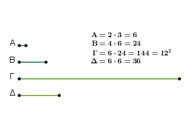
῾Ο γὰρ Α ἑαυτὸν πολλαπλασιάσας τὸν Δ ποιείτω. ὁ Δ ἄρα τετράγωνός ἐστιν. ἐπεὶ οὖν ὁ Α ἑαυτὸν μὲν πολλαπλασιάσας τὸν Δ πεποίηκεν, τὸν δὲ Β πολλαπλασιάσας τὸν Γ πεποίηκεν, ἔστιν ἄρα ὡς ὁ Α πρὸς τὸν Β, οὕτως ὁ Δ πρὸς τὸν Γ. καὶ ἐπεὶ οἱ Α, Β ὅμοιοι ἐπίπεδοί εἰσιν ἀριθμοί, τῶν Α, Β ἄρα εἷς μέσος ἀνάλογον ἐμπίπτει ἀριθμός.
ἐὰν δὲ δύο ἀριθμῶν μεταξὺ κατὰ τὸ συνεχὲς ἀνάλογον ἐμπίπτωσιν ἀριθμοί, ὅσοι εἰς αὐτοὺς ἐμπίπτουσι, τοσοῦτοι καὶ εἰς τοὺς τὸν αὐτὸν λόγον ἔχοντας· ὥστε καὶ τῶν Δ, Γ εἷς μέσος ἀνάλογον ἐμπίπτει ἀριθμός. καί ἐστι τετράγωνος ὁ Δ· τετράγωνος ἄρα καὶ ὁ Γ· ὅπερ ἔδει δεῖξαι.
᾿Εὰν δύο ἀριθμοὶ πολλαπλασιάσαντες ἀλλήλους ποιῶσι τετράγωνον, ὅμοιοι ἐπίπεδοί εἰσιν ἀριθμοί.
῎Εστωσαν δύο ἀριθμοὶ οἱ Α, Β, καὶ ὁ Α τὸν Β πολλαπλασιάσας τετράγωνον τὸν Γ ποιείτω· λέγω, ὅτι οἱ Α, Β ὅμοιοι ἐπίπεδοί εἰσιν ἀριθμοί.
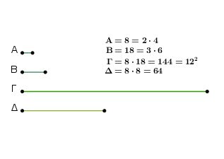
῾Ο γὰρ Α ἑαυτὸν πολλαπλασιάσας τὸν Δ ποιείτω· ὁ Δ ἄρα τετράγωνός ἐστιν. καὶ ἐπεὶ ὁ Α ἑαυτὸν μὲν πολλαπλασιάσας τὸν Δ πεποίηκεν, τὸν δὲ Β πολλαπλασιάσας τὸν Γ πεποίηκεν, ἔστιν ἄρα ὡς ὁ Α πρὸς τὸν Β, ὁ Δ πρὸς τὸν Γ. καὶ ἐπεὶ ὁ Δ τετράγωνός ἐστιν, ἀλλὰ καὶ ὁ Γ, οἱ Δ, Γ ἄρα ὅμοιοι ἐπίπεδοί εἰσιν.
τῶν Δ, Γ ἄρα εἷς μέσος ἀνάλογον ἐμπίπτει. καί ἐστιν ὡς ὁ Δ πρὸς τὸν Γ, οὕτως ὁ Α πρὸς τὸν Β· καὶ τῶν Α, Β ἄρα εἷς μέσος ἀνάλογον ἐμπίπτει. ἐὰν δὲ δύο ἀριθμῶν εἷς μέσος ἀνάλογον ἐμπίπτῃ, ὅμοιοι ἐπίπεδοί εἰσιν [οἱ] ἀριθμοί· οἱ ἄρα Α, Β ὅμοιοί εἰσιν ἐπίπεδοι· ὅπερ ἔδει δεῖξαι.
᾿Εὰν κύβος ἀριθμὸς ἑαυτὸν πολλαπλασιάσας ποιῇ τινα, ὁ γενόμενος κύβος ἔσται.
Κύβος γὰρ ἀριθμὸς ὁ Α ἑαυτὸν πολλαπλασιάσας τὸν Β ποιείτω· λέγω, ὅτι ὁ Β κύβος ἐστίν.
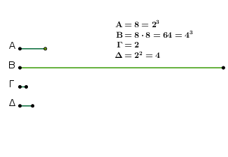
Εἰλήφθω γὰρ τοῦ Α πλευρὰ ὁ Γ, καὶ ὁ Γ ἑαυτὸν πολλαπλασιάσας τὸν Δ ποιείτω. φανερὸν δή ἐστιν, ὅτι ὁ Γ τὸν Δ πολλαπλασιάσας τὸν Α πεποίηκεν. καὶ ἐπεὶ ὁ Γ ἑαυτὸν πολλαπλασιάσας τὸν Δ πεποίηκεν, ὁ Γ ἄρα τὸν Δ μετρεῖ κατὰ τὰς ἐν αὑτῷ μονάδας.
ἀλλὰ μὴν καὶ ἡ μονὰς τὸν Γ μετρεῖ κατὰ τὰς ἐν αὐτῷ μονάδας· ἔστιν ἄρα ὡς ἡ μονὰς πρὸς τὸν Γ, ὁ Γ πρὸς τὸν Δ. πάλιν, ἐπεὶ ὁ Γ τὸν Δ πολλαπλασιάσας τὸν Α πεποίηκεν, ὁ Δ ἄρα τὸν Α μετρεῖ κατὰ τὰς ἐν τῷ Γ μονάδας. μετρεῖ δὲ καὶ ἡ μονὰς τὸν Γ κατὰ τὰς ἐν αὐτῷ μονάδας· ἔστιν ἄρα ὡς ἡ μονὰς πρὸς τὸν Γ, ὁ Δ πρὸς τὸν Α.
ἀλλ᾿ ὡς ἡ μονὰς πρὸς τὸν Γ, ὁ Γ πρὸς τὸν Δ· καὶ ὡς ἄρα ἡ μονὰς πρὸς τὸν Γ, οὕτως ὁ Γ πρὸς τὸν Δ καὶ ὁ Δ πρὸς τὸν Α. τῆς ἄρα μονάδος καὶ τοῦ Α ἀριθμοῦ δύο μέσοι ἀνάλογον κατὰ τὸ συνεχὲς ἐμπεπτώκασιν ἀριθμοὶ οἱ Γ, Δ.
πάλιν, ἐπεὶ ὁ Α ἑαυτὸν πολλαπλασιάσας τὸν Β πεποίηκεν, ὁ Α ἄρα τὸν Β μετρεῖ κατὰ τὰς ἐν αὐτῷ μονάδας· μετρεῖ δὲ καὶ ἡ μονὰς τὸν Α κατὰ τὰς ἐν αὐτῷ μονάδας· ἔστιν ἄρα ὡς ἡ μονὰς πρὸς τὸν Α, ὁ Α πρὸς τὸν Β.
τῆς δὲ μονάδος καὶ τοῦ Α δύο μέσοι ἀνάλογον ἐμπεπτώκασιν ἀριθμοί· καὶ τῶν Α, Β ἄρα δύο μέσοι ἀνάλογον ἐμπεσοῦνται ἀριθμοί. ἐὰν δὲ δύο ἀριθμῶν δύο μέσοι ἀνάλογον ἐμπίπτωσιν, ὁ δὲ πρῶτος κύβος ᾖ, καὶ ὁ δεύτερος κύβος ἔσται. καί ἐστιν ὁ Α κύβος· καὶ ὁ Β ἄρα κύβος ἐστίν· ὅπερ ἔδει δεῖξαι.
᾿Εὰν κύβος ἀριθμὸς κύβον ἀριθμὸν πολλαπλασιάσας ποιῇ τινα, ὁ γενόμενος κύβος ἔσται.
Κύβος γὰρ ἀριθμὸς ὁ Α κύβον ἀριθμὸν τὸν Β πολλαπλασιάσας τὸν Γ ποιείτω· λέγω, ὅτι ὁ Γ κύβος ἐστίν.
῾Ο γὰρ Α ἑαυτὸν πολλαπλασιάσας τὸν Δ ποιείτω· ὁ Δ ἄρα κύβος ἐστίν.
καὶ ἐπεὶ ὁ Α ἑαυτὸν μὲν πολλαπλασιάσας τὸν Δ πεποίηκεν, τὸν δὲ Β πολλαπλασιάσας τὸν Γ πεποίηκεν, ἔστιν ἄρα ὡς ὁ Α πρὸς τὸν Β, οὕτως ὁ Δ πρὸς τὸν Γ. καὶ ἐπεὶ οἱ Α, Β κύβοι εἰσίν, ὅμοιοι στερεοί εἰσιν οἱ Α, Β.
τῶν Α, Β ἄρα δύο μέσοι ἀνάλογον ἐμπίπτουσιν ἀριθμοί· ὥστε καὶ τῶν Δ, Γ δύο μέσοι ἀνάλογον ἐμπεσοῦνται ἀριθμοί. καί ἐστι κύβος ὁ Δ· κύβος ἄρα καὶ ὁ Γ· ὅπερ ἔδει δεῖξαι.
᾿Εὰν κύβος ἀριθμὸς ἀριθμόν τινα πολλαπλασιάσας κύβον ποιῇ, καὶ ὁ πολλαπλασιασθεὶς κύβος ἔσται.
Κύβος γὰρ ἀριθμὸς ὁ Α ἀριθμόν τινα τὸν Β πολλαπλασιάσας κύβον τὸν Γ ποιείτω· λέγω, ὅτι ὁ Β κύβος ἐστίν.
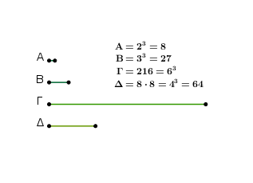
῾Ο γὰρ Α ἑαυτὸν πολλαπλασιάσας τὸν Δ ποιείτω· κύβος ἄρα ἐστίν ὁ Δ. καὶ ἐπεὶ ὁ Α ἑαυτὸν μὲν πολλαπλασιάσας τὸν Δ πεποίηκεν, τὸν δὲ Β πολλαπλασιάσας τὸν Γ πεποίηκεν, ἔστιν ἀρα ὡς ὁ Α πρὸς τὸν Β, ὁ Δ πρὸς τὸν Γ.
καὶ ἐπεὶ οἱ Δ, Γ κύβοι εἰσίν, ὅμοιοι στερεοί εἰσιν. τῶν Δ, Γ ἄρα δύο μέσοι ἀνάλογον ἐμπίπτουσιν ἀριθμοί. καί ἐστιν ὡς ὁ Δ πρὸς τὸν Γ, οὕτως ὁ Α πρὸς τὸν Β· καὶ τῶν Α, Β ἄρα δύο μέσοι ἀνάλογον ἐμπίπτουσιν ἀριθμοί. καί ἐστι κύβος ὁ Α· κύβος ἄρα ἐστὶ καὶ ὁ Β· ὅπερ ἔδει δεῖξαι.
᾿Εὰν ἀριθμὸς ἑαυτὸν πολλαπλασιάσας κύβον ποιῇ, καὶ αὐτὸς κύβος ἔσται.
᾿Αριθμὸς γὰρ ὁ Α ἑαυτὸν πολλαπλασιάσας κύβον τὸν Β ποιείτω· λέγω, ὅτι καὶ ὁ Α κύβος ἐστίν.
῾Ο γὰρ Α τὸν Β πολλαπλασιάσας τὸν Γ ποιείτω. ἐπεὶ οὖν ὁ Α ἑαυτὸν μὲν πολλαπλασιάσας τὸν Β πεποίηκεν, τὸν δὲ Β πολλαπλασιάσας τὸν Γ πεποίηκεν, ὁ Γ ἄρα κύβος ἐστίν. καὶ ἐπεὶ ὁ Α ἑαυτὸν πολλαπλασιάσας τὸν Β πεποίηκεν, ὁ Α ἄρα τὸν Β μετρεῖ κατὰ τὰς ἐν αὑτῷ μονάδας.
μετρεῖ δὲ καὶ ἡ μονὰς τὸν Α κατὰ τὰς ἐν αὐτῷ μονάδας. ἔστιν ἄρα ὡς ἡ μονὰς πρὸς τὸν Α, οὕτως ὁ Α πρὸς τὸν Β.
καὶ ἐπεὶ ὁ Α τὸν Β πολλαπλασιάσας τὸν Γ πεποίηκεν, ὁ Β ἄρα τὸν Γ μετρεῖ κατὰ τὰς ἐν τῷ Α μονάδας. μετρεὶ δὲ καὶ ἡ μονὰς τὸν Α κατὰ τὰς ἐν αὐτῷ μονάδας. ἔστιν ἄρα ὡς ἡ μονὰς πρὸς τὸν Α, οὕτως ὁ Β πρὸς τὸν Γ. ἀλλ᾿ ὡς ἡ μονὰς πρὸς τὸν Α, οὕτως ὁ Α πρὸς τὸν Β· καὶ ὡς ἄρα ὁ Α πρὸς τὸν Β, ὁ Β πρὸς τὸν Γ.
καὶ ἐπεὶ οἱ Β, Γ κύβοι εἰσίν, ὅμοιοι στερεοί εἰσιν. τῶν Β, Γ ἄρα δύο μέσοι ἀνάλογόν εἰσιν ἀριθμοί. καί ἐστιν ὡς ὁ Β πρὸς τὸν Γ, ὁ Α πρὸς τὸν Β. καὶ τῶν Α, Β ἄρα δύο μέσοι ἀνάλογόν εἰσιν ἀριθμοί. καί ἐστιν κύβος ὁ Β· κύβος ἄρα ἐστὶ καὶ ὁ Α· ὅπερ ἔδει δεὶξαι.
᾿Εὰν σύνθετος ἀριθμὸς ἀριθμόν τινα πολλαπλασιάσας ποιῇ τινα, ὁ γενόμενος στερεὸς ἔσται.
Σύνθετος γὰρ ἀριθμὸς ὁ Α ἀριθμόν τινα τὸν Β πολλαπλασιάσας τὸν Γ ποιείτω· λέγω, ὅτι ὁ Γ στερεός ἐστιν.
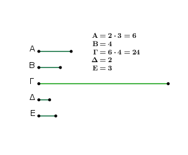
᾿Επεὶ γὰρ ὁ Α σύνθετός ἐστιν, ὑπὸ ἀριθμοῦ τινος μετρηθήσεται. μετρείσθω ὑπὸ τοῦ Δ, καὶ ὁσάκις ὁ Δ τὸν Α μετρεῖ, τοσαῦται μονάδες ἔστωσαν ἐν τῷ Ε.
ἐπεὶ οὖν ὁ Δ τὸν Α μετρεῖ κατὰ τὰς ἐν τῷ Ε μονάδας, ὁ Ε ἄρα τὸν Δ πολλαπλασιάσας τὸν Α πεποίηκεν. καὶ ἐπεὶ ὁ Α τὸν Β πολλαπλασιάσας τὸν Γ πεποίηκεν, ὁ δὲ Α ἐστιν ὁ ἐκ τῶν Δ, Ε, ὁ ἄρα ἐκ τῶν Δ, Ε τὸν Β πολλαπλασιάσας τὸν Γ πεποίηκεν.
ὁ Γ ἄρα στερεός ἐστιν, πλευραὶ δὲ αὐτοῦ εἰσιν οἱ Δ, Ε, Β· ὅπερ ἔδει δεῖξαι.
᾿Εὰν ἀπὸ μονάδος ὁποσοιοῦν ἀριθμοὶ ἑξῆς ἀνάλογον ὦσιν, ὁ μὲν τρίτος ἀπὸ τῆς μονάδος τετράγωνος ἔσται καὶ οἱ ἕνα διαλείποντες, ὁ δὲ τέταρτος κύβος καὶ οἱ δύο διαλείποντες πάντες, ὁ δὲ ἕβδομος κύβος ἅμα καὶ τετράγωνος καὶ οἱ πέντε διαλείποντες.
῎Εστωσαν ἀπὸ μονάδος ὁποσοιοῦν ἀριθμοὶ ἑξῆς ἀνάλογον οἱ Α, Β, Γ, Δ, Ε, Ζ· λέγω, ὅτι ὁ μὲν τρίτος ἀπὸ τῆς μονάδος ὁ Β τετράγωνός ἐστι καὶ οἱ ἕνα διαλείποντες πάντες, ὁ δὲ τέταρτος ὁ Γ κύβος καὶ οἱ δύο διαλείποντες πάντες, ὁ δὲ ἕβδομος ὁ Ζ κύβος ἅμα καὶ τετράγωνος καὶ οἱ πέντε διαλείποντες πάντες.
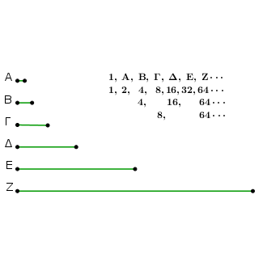
᾿Επεὶ γάρ ἐστιν ὡς ἡ μονὰς πρὸς τὸν Α, οὕτως ὁ Α πρὸς τὸν Β, ἰσάκις ἄρα ἡ μονὰς τὸν Α ἀριθμὸν μετρεῖ καὶ ὁ Α τὸν Β. ἡ δὲ μονὰς τὸν Α ἀριθμὸν μετρεῖ κατὰ τὰς ἐν αὐτῷ μονάδας· καὶ ὁ Α ἄρα τὸν Β μετρεῖ κατὰ τὰς ἐν τῷ Α μονάδας. ὁ Α ἄρα ἑαυτὸν πολλαπλασιάσας τὸν Β πεποίηκεν· τετράγωνος ἄρα ἐστὶν ὁ Β.
καὶ ἐπεὶ οἱ Β, Γ, Δ ἑξῆς ἀνάλογόν εἰσιν, ὁ δὲ Β τετράγωνός ἐστιν, καὶ ὁ Δ ἄρα τετράγωνός ἐστιν. διὰ τὰ αὐτὰ δὴ καὶ ὁ Ζ τετράγωνός ἐστιν. ὁμοίως δὴ δείξομεν, ὅτι καὶ οἱ ἕνα διαλείποντες πάντες τετράγωνοί εἰσιν.
λέγω δή, ὅτι καὶ ὁ τέταρτος ἀπὸ τῆς μονάδος ὁ Γ κύβος ἐστὶ καὶ οἱ δύο διαλείποντες πάντες. ἐπεὶ γάρ ἐστιν ὡς ἡ μονὰς πρὸς τὸν Α, οὕτως ὁ Β πρὸς τὸν Γ, ἰσάκις ἄρα ἡ μονὰς τὸν Α ἀριθμὸν μετρεῖ καὶ ὁ Β τὸν Γ. ἡ δὲ μονὰς τὸν Α ἀριθμὸν μετρεῖ κατὰ τὰς ἐν τῷ Α μονάδας· καὶ ὁ Β ἄρα τὸν Γ μετρεῖ κατὰ τὰς ἐν τῷ Α μονάδας· ὁ Α ἄρα τὸν Β πολλαπλασιάσας τὸν Γ πεποίηκεν. ἐπεὶ οὖν ὁ Α ἑαυτὸν μὲν πολλαπλασιάσας τὸν Β πεποίηκεν, τὸν δὲ Β πολλαπλασιάσας τὸν Γ πεποίηκεν, κύβος ἄρα ἐστὶν ὁ Γ. καὶ ἐπεὶ οἱ Γ, Δ, Ε, Ζ ἑξῆς ἀνάλογόν εἰσιν, ὁ δὲ Γ κύβος ἐστίν, καὶ ὁ Ζ ἄρα κύβος ἐστίν.
ἐδείχθη δὲ καὶ τετράγωνος· ὁ ἄρα ἕβδομος ἀπὸ τῆς μονάδος κύβος τέ ἐστι καὶ τετράγωνος. ὁμοίως δὴ δείξομεν, ὅτι καὶ οἱ πέντε διαλείποντες πάντες κύβοι τέ εἰσι καὶ τετράγωνοι· ὅπερ ἔδει δεῖξαι.
᾿Εὰν ἀπὸ μονάδος ὁποσοιοῦν ἑξῆς κατὰ τὸ συνεχὲς ἀριθμοὶ ἀνάλογον ὦσιν, ὁ δὲ μετὰ τὴν μονάδα τετράγωνος ᾖ, καὶ οἱ λοιποὶ πάντες τετράγωνοι ἔσονται. καὶ ἐὰν ὁ μετὰ τὴν μονάδα κύβος ᾖ, καὶ οἱ λοιποὶ πάντες κύβοι ἔσονται.
῎Εστωσαν ἀπὸ μονάδος ἑξῆς ἀνάλογον ὁσοιδηποτοῦν ἀριθμοὶ οἱ Α, Β, Γ, Δ, Ε, Ζ, ὁ δὲ μετὰ τὴν μονάδα ὁ Α τετράγωνος ἔστω· λέγω, ὅτι καὶ οἱ λοιποὶ πάντες τετράγωνοι ἔσονται.
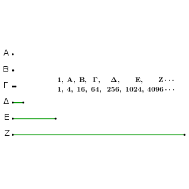
῞Οτι μὲν οὖν ὁ τρίτος ἀπὸ τῆς μονάδος ὁ Β τετράγωνός ἐστι καὶ οἱ ἕνα διαπλείποντες πάντες, δέδεικται· λέγω [δή], ὅτι καὶ οἱ λοιποὶ πάντες τετράγωνοί εἰσιν.
ἐπεὶ γὰρ οἱ Α, Β, Γ ἑξῆς ἀνάλογόν εἰσιν, καί ἐστιν ὁ Α τετράγωνος, καὶ ὁ Γ [ἄρα] τετράγωνος ἐστιν. πάλιν, ἐπεὶ [καὶ] οἱ Β, Γ, Δ ἑξῆς ἀνάλογόν εἰσιν, καί ἐστιν ὁ Β τετράγωνος, καὶ ὁ Δ [ἄρα] τετράγωνός ἐστιν. ὁμοίως δὴ δείξομεν, ὅτι καὶ οἱ λοιποὶ πάντες τετράγωνοί εἰσιν.
᾿Αλλὰ δὴ ἔστω ὁ Α κύβος· λέγω, ὅτι καὶ οἱ λοιποὶ πάντες κύβοι εἰσίν. ῞Οτι μὲν οὖν ὁ τέταρτος ἀπὸ τῆς μονάδος ὁ Γ κύβος ἐστὶ καὶ οἱ δύο διαλείποντες πάντες, δέδεικται· λέγω [δή], ὅτι καὶ οἱ λοιποὶ πάντες κύβοι εἰσίν.
ἐπεὶ γάρ ἐστιν ὡς ἡ μονὰς πρὸς τὸν Α, οὕτως ὁ Α πρὸς τὸν Β, ἰσάκις ἀρα ἡ μονὰς τὸν Α μετρεῖ καὶ ὁ Α τὸν Β. ἡ δὲ μονὰς τὸν Α μετρεῖ κατὰ τὰς ἐν αὐτῷ μονάδας· καὶ ὁ Α ἄρα τὸν Β μετρεῖ κατὰ τὰς ἐν αὑτῷ μονάδας· ὁ Α ἄρα ἑαυτὸν πολλαπλασιάσας τὸν Β πεποίηκεν. καί ἐστιν ὁ Α κύβος.
ἐὰν δὲ κύβος ἀριθμὸς ἑαυτὸν πολλαπλασιάσας ποιῇ τινα, ὁ γενόμενος κύβος ἐστίν· καὶ ὁ Β ἄρα κύβος ἐστίν. καὶ ἐπεὶ τέσσαρες ἀριθμοὶ οἱ Α, Β, Γ, Δ ἑξῆς ἀνάλογόν εἰσιν, καί ἐστιν ὁ Α κύβος, καὶ ὁ Δ ἄρα κύβος ἐστίν. διὰ τὰ αὐτὰ δὴ καὶ ὁ Ε κύβος ἐστίν, καὶ ὁμοίως οἱ λοιποὶ πάντες κύβοι εἰσίν· ὅπερ ἔδει δεῖξαι.
᾿Εὰν ἀπὸ μονάδος ὁποσοιοῦν ἀριθμοὶ [ἑξῆς] ἀνάλογον ὦσιν, ὁ δὲ μετὰ τὴν μονάδα μὴ ᾖ τετράγωνος, οὐδ᾿ ἄλλος οὐδεὶς τετράγωνος ἔσται χωρὶς τοῦ τρίτου ἀπὸ τῆς μονάδος καὶ τῶν ἕνα διαλειπόντων πάντων. καὶ ἐὰν ὁ μετὰ τὴν μονάδα κύβος μὴ ᾖ, οὐδὲ ἄλλος οὐδεὶς κύβος ἔσται χωρὶς τοῦ τετάρτου ἀπὸ τῆς μονάδος καὶ τῶν δύο διαλειπόντων πάντων.
῎Εστωσαν ἀπὸ μονάδος ἑξῆς ἀνάλογον ὁσοιδηποτοῦν ἀριθμοὶ οἱ Α, Β, Γ, Δ, Ε, Ζ, ὁ μετὰ τὴν μονάδα ὁ Α μὴ ἔστω τετράγωνος· λέγω, ὅτι οὐδὲ ἄλλος οὐδεὶς τετράγωνος ἔσται χωρὶς τοῦ τρίτου ἀπὸ τὴς μονάδος [καὶ τῶν ἕνα διαλειπόντων].
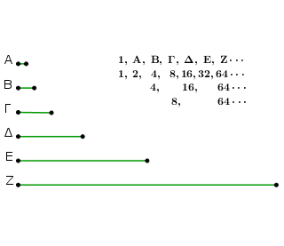
Εἰ γὰρ δυνατόν, ἔστω ὁ Γ τετράγωνος. ἔστι δὲ καὶ ὁ Β τετράγωνος· οἱ Β, Γ ἄρα πρὸς ἀλλήλους λόγον ἔχουσιν, ὃν τετράγωνος ἀριθμὸς πρὸς τετράγωνον ἀριθμόν. καί ἐστιν ὡς ὁ Β πρὸς τὸν Γ, ὁ Α πρὸς τὸν Β· οἱ Α, Β ἄρα πρὸς ἀλλήλους λόγον ἔχουσιν, ὃν τετράγωνος ἀριθμὸς πρὸς τετράγωνον ἀριθμόν· ὥστε οἱ Α, Β ὅμοιοι ἐπίπεδοί εἰσιν. καί ἐστι τετράγωνος ὁ Β· τετράγωνος ἄρα ἐστὶ καὶ ὁ Α· ὅπερ οὐχ ὑπέκειτο. οὐκ ἄρα ὁ Γ τετράγωνός ἐστιν. ὁμοίως δὴ δείξομεν, ὅτι οὐδ᾿ ἄλλος οὐδεὶς τετράγωνός ἐστι χωρὶς τοῦ τρίτου ἀπὸ τῆς μονάδος καὶ τῶν ἕνα διαλειπόντων.
᾿Αλλὰ δὴ μὴ ἔστω ὁ Α κύβος. λέγω, ὅτι οὐδ᾿ ἄλλος οὐδεὶς κύβος ἔσται χωρὶς τοῦ τετάρτου ἀπὸ τῆς μονάδος καὶ τῶν δύο διαλειπόντων.
Εἰ γὰρ δυνατόν, ἔστω ὁ Δ κύβος. ἔστι δὲ καὶ ὁ Γ κύβος· τέταρτος γάρ ἐστιν ἀπὸ τῆς μονάδος. καί ἐστιν ὡς ὁ Γ πρὸς τὸν Δ, ὁ Β πρὸς τὸν Γ· καὶ ὁ Β ἄρα πρὸς τὸν Γ λόγον ἔχει, ὃν κύβος πρὸς κύβον. καί ἐστιν ὁ Γ κύβος· καὶ ὁ Β ἄρα κύβος ἐστίν. καὶ ἐπεί ἐστιν ὡς ἡ μονὰς πρὸς τὸν Α, ὁ Α πρὸς τὸν Β, ἡ δὲ μονὰς τὸν Α μετρεῖ κατὰ τὰς ἐν αὐτῷ μονάδας, καὶ ὁ Α ἄρα τὸν Β μετρεῖ κατὰ τὰς ἐν αὑτῷ μονάδας· ὁ Α ἄρα ἑαυτὸν πολλαπλασιάσας κύβον τὸν Β πεποίηκεν.
ἐὰν δὲ ἀριθμὸς ἑαυτὸν πολλαπλασιάσας κύβον ποιῇ, καὶ αὐτὸς κύβος ἔσται. κύβος ἄρα καὶ ὁ Α· ὅπερ οὐχ ὑπόκειται. οὐκ ἄρα ὁ Δ κύβος ἐστίν. ὁμοίως δὴ δείξομεν, ὅτι οὐδ᾿ ἄλλος οὐδεὶς κύβος ἐστὶ χωρὶς τοῦ τετάρτου ἀπὸ τῆς μονάδος καὶ τῶν δύο διαλειπόντων· ὅπερ ἔδει δεῖξαι.
᾿Εὰν ἀπὸ μονάδος ὁποσοιοῦν ἀριθμοὶ ἑξῆς ἀνάλογον ὦσιν, ὁ ἐλάττων τὸν μείζονα μετρεῖ κατά τινα τῶν ὑπαρχόντων ἐν τοῖς ἀνάλογον ἀριθμοῖς.
῎Εστωσαν ἀπὸ μονάδος τῆς Α ὁποσοιοῦν ἀριθμοὶ ἑξῆς ἀνάλογον οἱ Β, Γ, Δ, Ε· λέγω, ὅτι τῶν Β, Γ, Δ, Ε ὁ ἐλάχιστος ὁ Β τὸν Ε μετρεῖ κατά τινα τῶν Γ, Δ.
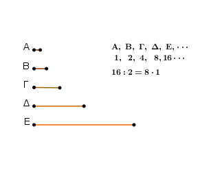
᾿Επεὶ γάρ ἐστιν ὡς ἡ Α μονὰς πρὸς τὸν Β, οὕτως ὁ Δ πρὸς τὸν Ε, ἰσάκις ἄρα ἡ Α μονὰς τὸν Β ἀριθμὸν μετρεῖ καὶ ὁ Δ τὸν Ε· ἐναλλὰξ ἄρα ἰσάκις ἡ Α μονὰς τὸν Δ μετρεῖ καὶ ὁ Β τὸν Ε. ἡ δὲ Α μονὰς τὸν Δ μετρεῖ κατὰ τὰς ἐν αὐτῷ μονάδας· καὶ ὁ Β ἄρα τὸν Ε μετρεῖ κατὰ τὰς ἐν τῷ Δ μονάδας· ὥστε ὁ ἐλάσσων ὁ Β τὸν μείζονα τὸν Ε μετρεῖ κατά τινα ἀριθμὸν τῶν ὑπαρχόντων ἐν τοῖς ἀνάλογον ἀριθμοῖς.
Πόρισμα Καὶ φανερόν, ὅτι ἣν ἔχει τάξιν ὁ μετρῶν ἀπὸ μονάδος, τὴν αὐτὴν ἔχει καὶ ὁ καθ᾿ ὃν μετρεῖ ἀπὸ τοῦ μετρουμένου ἐπὶ τὸ πρὸ αὐτοῦ. ὅπερ ἔδει δεῖξαι.
᾿Εὰν ἀπὸ μονάδος ὁποσοιοῦν ἀριθμοὶ ἑξῆς ἀνάλογον ὦσιν, ὑφ᾿ ὅσων ἂν ὁ ἔσχατος πρώτων ἀριθμῶν μετρῆται, ὑπὸ τῶν αὐτῶν καὶ ὁ παρὰ τὴν μονάδα μετρηθήσεται.
῎Εστωσαν ἀπὸ μονάδος ὁποσοιδηποτοῦν ἀριθμοὶ ἀνάλογον οἱ Α, Β, Γ, Δ· λέγω, ὅτι ὑφ᾿ ὅσων ἂν ὁ Δ πρώτων ἀριθμῶν μετρῆται, ὑπὸ τῶν αὐτῶν καὶ ὁ Α μετρηθήσεται.
Μετρείσθω γὰρ ὁ Δ ὑπό τινος πρώτου ἀριθμοῦ τοῦ Ε· λέγω, ὅτι ὁ Ε τὸν Α μετρεῖ. μὴ γάρ· καί ἐστιν ὁ Ε πρῶτος, ἅπας δὲ πρῶτος ἀριθμὸς πρὸς ἅπαντα, ὃν μὴ μετρεῖ, πρῶτός ἐστιν· οἱ Ε, Α ἄρα πρῶτοι πρὸς ἀλλήλους εἰσίν. καὶ ἐπεὶ ὁ Ε τὸν Δ μετρεῖ, μετρείτω αὐτὸν κατὰ τὸν Ζ· ὁ Ε ἄρα τὸν Ζ πολλαπλασιάσας τὸν Δ πεποίηκεν.
πάλιν, ἐπεὶ ὁ Α τὸν Δ μετρεῖ κατὰ τὰς ἐν τῷ Γ μονάδας, ὁ Α ἄρα τὸν Γ πολλαπλασιάσας τὸν Δ πεποίηκεν. ἀλλὰ μὴν καὶ ὁ Ε τὸν Ζ πολλαπλασιάσας τὸν Δ πεποίηκεν· ὁ ἄρα ἐκ τῶν Α, Γ ἴσος ἐστὶ τῷ ἐκ τῶν Ε, Ζ. ἔστιν ἄρα ὡς ὁ Α πρὸς τὸν Ε, ὁ Ζ πρὸς τὸν Γ. οἱ δὲ Α, Ε πρῶτοι, οἱ δὲ πρῶτοι καὶ ἐλάχιστοι, οἱ δὲ ἐλάχιστοι μετροῦσι τοὺς τὸν αὐτὸν λόγον ἔχοντας ἰσάκις ὅ τε ἡγούμενος τὸν ἡγούμενον καὶ ὁ ἑπόμενος τὸν ἑπόμενον· μετρεῖ ἄρα ὁ Ε τὸν Γ.
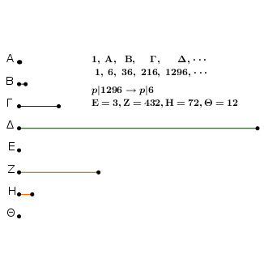
μετρείτω αὐτὸν κατὰ τὸν Η· ὁ Ε ἄρα τὸν Η πολλαπλασιάσας τὸν Γ πεποίηκεν. ἀλλὰ μὴν διὰ τὸ πρὸ τούτου καὶ ὁ Α τὸν Β πολλαπλασιάσας τὸν Γ πεποίηκεν. ὁ ἄρα ἐκ τῶν Α, Β ἴσος ἐστὶ τῷ ἐκ τῶν Ε, Η. ἔστιν ἄρα ὡς ὁ Α πρὸς τὸν Ε, ὁ Η πρὸς τὸν Β. οἱ δὲ Α, Ε πρῶτοι, οἱ δὲ πρῶτοι καὶ ἐλάχιστοι, οἱ δὲ ἐλάχιστοι ἀριθμοὶ μετροῦσι τοὺς τὸν αὐτὸν λόγον ἔχοντας αὐτοῖς ἰσάκις ὅ τε ἡγούμενος τὸν ἡγούμενον καὶ ὁ ἑπόμενος τὸν ἑπόμενον· μετρεῖ ἄρα ὁ Ε τὸν Β. μετρείτω αὐτὸν κατὰ τὸν Θ· ὁ Ε ἄρα τὸν Θ πολλαπλασιάσας τὸν Β πεποίηκεν.
ἀλλὰ μὴν καὶ ὁ Α ἑαυτὸν πολλαπλασιάσας τὸν Β πεποίηκεν· ὁ ἄρα ἐκ τῶν Ε, Θ ἴσος ἐστὶ τῷ ἀπὸ τοῦ Α. ἔστιν ἄρα ὡς ὁ Ε πρὸς τὸν Α, ὁ Α πρὸς τὸν Θ. οἱ δὲ Α, Ε πρῶτοι, οἱ δὲ πρῶτοι καὶ ἐλάχιστοι, οἱ δὲ ἐλάχιστοι μετροῦσι τοὺς τὸν αὐτὸν λόγον ἔχοντας ἰσάκις ὅ ἡγούμενος τὸν ἡγούμενον καὶ ὁ ἑπόμενος τὸν ἑπόμενον· μετρεῖ ἄρα ὁ Ε τὸν Α ὡς ἡγούμενος ἡγούμενον. ἀλλὰ μὴν καὶ οὐ μετρεῖ· ὅπερ ἀδύνατον.
οὐκ ἄρα οἱ Ε, Α πρῶτοι πρὸς ἀλλήλους εἰσίν. σύνθετοι ἄρα. οἱ δὲ σύνθετοι ὑπὸ [πρώτου] ἀριθμοῦ τινος μετροῦνται. καὶ ἐπεὶ ὁ Ε πρῶτος ὑπόκειται, ὁ δὲ πρῶτος ὑπὸ ἑτέρου ἀριθμοῦ οὐ μετρεῖται ἢ ὑφ᾿ ἑαυτοῦ, ὁ Ε ἄρα τοὺς Α, Ε μετρεῖ· ὥστε ὁ Ε τὸν Α μετρεῖ. μετρεῖ δὲ καὶ τὸν Δ· ὁ Ε ἄρα τοὺς Α, Δ μετρεῖ.
ὁμοίως δὴ δείξομεν, ὅτι ὑφ᾿ ὅσων ἂν ὁ Δ πρώτων ἀριθμῶν μετρῆται, ὑπὸ τῶν αὐτῶν καὶ ὁ Α μετρηθήσεται· ὅπερ ἔδει δεῖξαι.
᾿Εὰν ἀπὸ μονάδος ὁποσοιοῦν ἀριθμοὶ ἑξῆς ἀνάλογον ὦσιν, ὁ δὲ μετὰ τὴν μονάδα πρῶτος ᾖ, ὁ μέγιστος ὑπ᾿ οὐδενὸς [ἄλλου] μετρηθήσεται παρὲξ τῶν ὑπαρχόντων ἐν τοῖς ἀνάλογον ἀριθμοῖς.
῎Εστωσαν ἀπὸ μονάδος ὁποσοιοῦν ἀριθμοὶ ἑξῆς ἀνάλογον οἱ Α, Β, Γ, Δ, ὁ δὲ μετὰ τὴν μονάδα ὁ Α πρῶτος ἔστω· λέγω, ὅτι ὁ μέγιστος αὐτῶν ὁ Δ ὑπ᾿ οὐδενὸς ἄλλου μετρηθήσεται παρὲξ τῶν Α, Β, Γ.
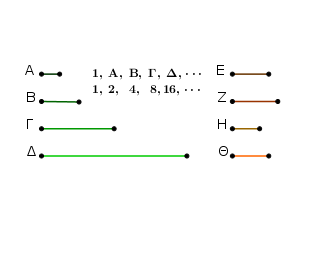
Εἰ γὰρ δυνατόν, μετρείσθω ὑπὸ τοῦ Ε, καὶ ὁ Ε μηδενὶ τῶν Α, Β, Γ ἔστω ὁ αὐτός. φανερὸν δή, ὅτι ὁ Ε πρῶτος οὔκ ἐστιν. εἰ γὰρ ὁ Ε πρῶτός ἐστι καὶ μετρεῖ τὸν Δ, καὶ τὸν Α μετρήσει πρῶτον ὄντα μὴ ὢν αὐτῷ ὁ αὐτός· ὅπερ ἐστὶν ἀδύνατον. οὐκ ἄρα ὁ Ε πρῶτός ἐστιν.
σύνθετος ἄρα. πᾶς δὲ σύνθετος ἀριθμὸς ὑπὸ πρώτου τινὸς ἀριθμοῦ μετρεῖται· ὁ Ε ἄρα ὑπὸ πρώτου τινὸς ἀριθμοῦ μετρεῖται. λέγω δή, ὅτι ὑπ᾿ οὐδενὸς ἄλλου πρώτου μετρηθήσεται πλὴν τοῦ Α.
εἰ γὰρ ὑφ᾿ ἑτέρου μετρεῖται ὁ Ε, ὁ δὲ Ε τὸν Δ μετρεῖ, κἀκεῖνος ἄρα τὸν Δ μετρήσει· ὥστε καὶ τὸν Α μετρήσει πρῶτον ὄντα μὴ ὢν αὐτῷ ὁ αὐτός· ὅπερ ἐστὶν ἀδύνατον. ὁ Α ἄρα τὸν Ε μετρεῖ. καὶ ἐπεὶ ὁ Ε τὸν Δ μετρεῖ, μετρείτω αὐτὸν κατὰ τὸν Ζ.
λέγω, ὅτι ὁ Ζ οὐδενὶ τῶν Α, Β, Γ ἐστιν ὁ αὐτός. εἰ γὰρ ὁ Ζ ἑνὶ τῶν Α, Β, Γ ἐστιν ὁ αὐτὸς καὶ μετρεῖ τὸν Δ κατὰ τὸν Ε, καὶ εἷς ἄρα τῶν Α, Β, Γ τὸν Δ μετρεῖ κατά τὸν Ε. ἀλλὰ εἷς τῶν Α, Β, Γ τὸν Δ μετρεῖ κατά τινα τῶν Α, Β, Γ· καὶ ὁ Ε ἄρα ἑνὶ τῶν Α, Β, Γ ἐστιν ὁ αὐτός· ὅπερ οὐχ ὑπόκειται. οὐκ ἄρα ὁ Ζ ἑνὶ τῶν Α, Β, Γ ἐστιν ὁ αὐτός.
ὁμοίως δὴ δείξομεν, ὅτι μετρεῖται ὁ Ζ ὑπὸ τοῦ Α, δεικνύντες πάλιν, ὅτι ὁ Ζ οὔκ ἐστι πρῶτος. εἰ γὰρ, καὶ μετρεῖ τὸν Δ, καὶ τὸν Α μετρήσει πρῶτον ὄντα μὴ ὢν αὐτῷ ὁ αὐτός· ὅπερ ἐστὶν ἀδύνατον· οὐκ ἄρα πρῶτός ἐστιν ὁ Ζ· σύνθετος ἄρα. ἅπας δὲ σύνθετος ἀριθμὸς ὑπὸ πρώτου τινὸς ἀριθμοῦ μετρεῖται· ὁ Ζ ἄρα ὑπὸ πρώτου τινὸς ἀριθμοῦ μετρεῖται. λέγω δή, ὅτι ὑφ᾿ ἑτέρου πρώτου οὐ μετρηθήσεται πλὴν τοῦ Α.
εἰ γὰρ ἕτερός τις πρῶτος τὸν Ζ μετρεῖ, ὁ δὲ Ζ τὸν Δ μετρεῖ, κἀκεῖνος ἄρα τὸν Δ μετρήσει· ὥστε καὶ τὸν Α μετρήσει πρῶτον ὄντα μὴ ὢν αὐτῷ ὁ αὐτός· ὅπερ ἐστὶν ἀδύνατον. ὁ Α ἄρα τὸν Ζ μετρεῖ. καὶ ἐπεὶ ὁ Ε τὸν Δ μετρεῖ κατὰ τὸν Ζ, ὁ Ε ἄρα τὸν Ζ πολλαπλασιάσας τὸν Δ πεποίηκεν. ἀλλὰ μὴν καὶ ὁ Α τὸν Γ πολλαπλασιάσας τὸν Δ πεποίηκεν· ὁ ἄρα ἐκ τῶν Α, Γ ἴσος ἐστὶ τῷ ἐκ τῶν Ε, Ζ. ἀνάλογον ἄρα ἐστὶν ὡς ὁ Α πρὸς τὸν Ε, οὕτως ὁ Ζ πρὸς τὸν Γ. ὁ δὲ Α τὸν Ε μετρεῖ· καὶ ὁ Ζ ἄρα τὸν Γ μετρεῖ. μετρείτω αὐτὸν κατὰ τὸν Η.
ὁμοίως δὴ δείξομεν, ὅτι ὁ Η οὐδενὶ τῶν Α, Β ἐστιν ὁ αὐτός, καὶ ὅτι μετρεῖται ὑπὸ τοῦ Α. καὶ ἐπεὶ ὁ Ζ τὸν Γ μετρεῖ κατὰ τὸν Η, ὁ Ζ ἄρα τὸν Η πολλαπλασιάσας τὸν Γ πεποίηκεν. ἀλλὰ μὴν καὶ ὁ Α τὸν Β πολλαπλασιάσας τὸν Γ πεποίηκεν· ὁ ἄρα ἐκ τῶν Α, Β ἴσος ἐστὶ τῷ ἐκ τῶν Ζ, Η. ἀνάλογον ἄρα ὡς ὁ Α πρὸς τὸν Ζ, ὁ Η πρὸς τὸν Β. μετρεῖ δὲ ὁ Α τὸν Ζ· μετρεῖ ἄρα καὶ ὁ Η τὸν Β. μετρείτω αὐτὸν κατὰ τὸν Θ.
ὁμοίως δὴ δείξομεν, ὅτι ὁ Θ τῷ Α οὐκ ἔστιν ὁ αὐτός. καὶ ἐπεὶ ὁ Η τὸν Β μετρεῖ κατὰ τὸν Θ, ὁ Η ἄρα τὸν Θ πολλαπλασιάσας τὸν Β πεποίηκεν. ἀλλὰ μὴν καὶ ὁ Α ἑαυτὸν πολλαπλασιάσας τὸν Β πεποίηκεν· ὁ ἄρα ὑπὸ Θ, Η ἴσος ἐστὶ τῷ ἀπὸ τοῦ Α τετραγώνῳ· ἔστιν ἄρα ὡς ὁ Θ πρὸς τὸν Α, ὁ Α πρὸς τὸν Η. μετρεῖ δὲ ὁ Α τὸν Η· μετρεῖ ἄρα καὶ ὁ Θ τὸν Α πρῶτον ὄντα μὴ ὢν αὐτῷ ὁ αὐτός· ὅπερ ἄτοπον. οὐκ ἄρα ὁ μέγιστος ὁ Δ ὑπὸ ἑτέρου ἀριθμοῦ μετρηθήσεται παρὲξ τῶν Α, Β, Γ· ὅπερ ἔδει δεῖξαι.
᾿Εὰν ἐλάχιστος ἀριθμὸς ὑπὸ πρώτων ἀριθμῶν μετρῆται, ὑπ᾿ οὑδενὸς ἄλλου πρώτου ἀριθμοῦ μετρηθήσεται παρὲξ τῶν ἐξ ἀρχῆς μετρούντων.
᾿Ελάχιστος γὰρ ἀριθμὸς ὁ Α ὑπὸ πρώτων ἀριθμῶν τῶν Β, Γ, Δ μετρείσθω· λέγω, ὅτι ὁ Α ὑπ᾿ οὐδενὸς ἄλλου πρώτου ἀριθμοῦ μετρηθήσεται παρὲξ τῶν Β, Γ, Δ.
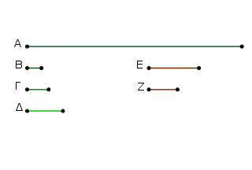
Εἰ γὰρ δυνατόν, μετρείσθω ὑπὸ πρώτου τοῦ Ε, καὶ ὁ Ε μηδενὶ τῶν Β, Γ, Δ ἔστω ὁ αὐτός. καὶ ἐπεὶ ὁ Ε τὸν Α μετρεῖ, μετρείτω αὐτὸν κατὰ τὸν Ζ· ὁ Ε ἄρα τὸν Ζ πολλαπλασιάσας τὸν Α πεποίηκεν.
καὶ μετρεῖται ὁ Α ὑπὸ πρώτων ἀριθμῶν τῶν Β, Γ, Δ. ἐὰν δὲ δύο ἀριθμοὶ πολλαπλασιάσαντες ἀλλήλους ποιῶσί τινα, τὸν δὲ γενόμενον ἐξ αὐτῶν μετρῇ τις πρῶτος ἀριθμός, καὶ ἕνα τῶν ἐξ ἀρχῆς μετρήσει· οἱ Β, Γ, Δ ἄρα ἕνα τῶν Ε, Ζ μετρήσουσιν.
τὸν μὲν οὖν Ε οὐ μετρήσουσιν· ὁ γὰρ Ε πρῶτός ἐστι καὶ οὐδενὶ τῶν Β, Γ, Δ ὁ αὐτός. τὸν Ζ ἄρα μετροῦσιν ἐλάσσονα ὄντα τοῦ Α· ὅπερ ἀδύνατον. ὁ γὰρ Α ὑπόκειται ἐλάχιστος ὑπὸ τῶν Β, Γ, Δ μετρούμενος. οὐκ ἄρα τὸν Α μετρήσει πρῶτος ἀριθμὸς παρὲξ τῶν Β, Γ, Δ· ὅπερ ἔδει δεῖξαι.
᾿Εὰν τρεῖς ἀριθμοὶ ἑξῆς ἀνάλογον ὦσιν ἐλάχιστοι τῶν τὸν αὐτὸν λόγον ἐχόντων αὐτοῖς, δύο ὁποιοιοῦν συντεθέντες πρὸς τὸν λοιπὸν πρῶτοί εἰσιν.
῎Εστωσαν τρεῖς ἀριθμοὶ ἑξῆς ἀνάλογον ἐλάχιστοι τῶν τὸν αὐτὸν λόγον ἐχόντων αὐτοῖς οἱ Α, Β, Γ· λέγω, ὅτι τῶν Α, Β, Γ δύο ὁποιοιοῦν συντεθέντες πρὸς τὸν λοιπὸν πρῶτοι εἰσιν, οἱ μὲν Α, Β πρὸς τὸν Γ, οἱ δὲ Β, Γ πρὸς τὸν Α καὶ ἔτι οἱ Α, Γ πρὸς τὸν Β.
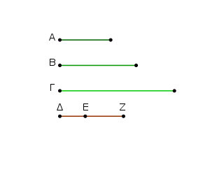
Εἰλήφθωσαν γὰρ ἐλάχιστοι ἀριθμοὶ τῶν τὸν αὐτὸν λόγον ἐχόντων τοῖς Α, Β, Γ δύο οἱ ΔΕ, ΕΖ. φανερὸν δή, ὅτι ὁ μὲν ΔΕ ἑαυτὸν πολλαπλασιάσας τὸν Α πεποίηκεν, τὸν δὲ ΕΖ πολλαπλασιάσας τὸν Β πεποίηκεν, καὶ ἔτι ὁ ΕΖ ἑαυτὸν πολλαπλασιάσας τὸν Γ πεποίηκεν. καὶ ἐπεὶ οἱ ΔΕ, ΕΖ ἐλάχιστοί εἰσιν, πρῶτοι πρὸς ἀλλήλους εἰσίν. ἐὰν δὲ δύο ἀριθμοὶ πρῶτοι πρὸς ἀλλήλους ὦσιν, καὶ συναμφότερος πρὸς ἑκάτερον πρῶτός ἐστιν· καὶ ὁ ΔΖ ἄρα πρὸς ἑκάτερον τῶν ΔΕ, ΕΖ πρῶτός ἐστιν.
ἀλλὰ μὴν καὶ ὁ ΔΕ πρὸς τὸν ΕΖ πρῶτός ἐστιν· οἱ ΔΖ, ΔΕ ἄρα πρὸς τὸν ΕΖ πρῶτοί εἰσιν. ἐὰν δὲ δύο ἀριθμοὶ πρός τινα ἀριθμὸν πρῶτοι ὦσιν, καὶ ὁ ἐξ αὐτῶν γενόμενος πρὸς τὸν λοιπὸν πρῶτός ἐστιν· ὥστε ὁ ἐκ τῶν ΖΔ, ΔΕ πρὸς τὸν ΕΖ πρῶτός ἐστιν· ὥστε καὶ ὁ ἐκ τῶν ΖΔ, ΔΕ πρὸς τὸν ἀπὸ τοῦ ΕΖ πρῶτός ἐστιν. [ἐὰν γὰρ δύο ἀριθμοὶ πρῶτοι πρὸς ἀλλήλους ὦσιν, ὁ ἐκ τοῦ ἑνὸς αὐτῶν γενόμενος πρὸς τὸν λοιπὸν πρῶτός ἐστιν].
ἀλλ᾿ ὁ ἐκ τῶν ΖΔ, ΔΕ ὁ ἀπὸ τοῦ ΔΕ ἐστι μετὰ τοῦ ἐκ τῶν ΔΕ, ΕΖ· ὁ ἄρα ἀπὸ τοῦ ΔΕ μετὰ τοῦ ἐκ τῶν ΔΕ, ΕΖ πρὸς τὸν ἀπὸ τοῦ ΕΖ πρῶτός ἐστιν. καί ἐστιν ὁ μὲν ἀπὸ τοῦ ΔΕ ὁ Α, ὁ δὲ ἐκ τῶν ΔΕ, ΕΖ ὁ Β, ὁ δὲ ἀπὸ τοῦ ΕΖ ὁ Γ· οἱ Α, Β ἄρα συντεθέντες πρὸς τὸν Γ πρῶτοί εἰσιν. ὁμοίως δὴ δείξομεν, ὅτι καὶ οἱ Β, Γ πρὸς τὸν Α πρῶτοί εἰσιν.
λέγω δή, ὅτι καὶ οἱ Α, Γ πρὸς τὸν Β πρῶτοί εἰσιν. ἐπεὶ γὰρ ὁ ΔΖ πρὸς ἑκάτερον τῶν ΔΕ, ΕΖ πρῶτός ἐστιν, καὶ ὁ ἀπὸ τοῦ ΔΖ πρὸς τὸν ἐκ τῶν ΔΕ, ΕΖ πρῶτός ἐστιν. ἀλλὰ τῷ ἀπὸ τοῦ ΔΖ ἴσοι εἰσὶν οἱ ἀπὸ τῶν ΔΕ, ΕΖ μετὰ τοῦ δὶς ἐκ τῶν ΔΕ, ΕΖ· καὶ οἱ ἀπὸ τῶν ΔΕ, ΕΖ ἄρα μετὰ τοῦ δὶς ὑπὸ τῶν ΔΕ, ΕΖ πρὸς τὸν ὑπὸ τῶν ΔΕ, ΕΖ πρῶτοί [εἰσι]. διελόντι οἱ ἀπὸ τῶν ΔΕ, ΕΖ μετὰ τοῦ ἅπαξ ὑπὸ ΔΕ, ΕΖ πρὸς τὸν ὑπὸ ΔΕ, ΕΖ πρῶτοί εἰσιν. ἔτι διελόντι οἱ ἀπὸ τῶν ΔΕ, ΕΖ ἄρα πρὸς τὸν ὑπὸ ΔΕ, ΕΖ πρῶτοί εἰσιν. καί ἐστιν ὁ μὲν ἀπὸ τοῦ ΔΕ ὁ Α, ὁ δὲ ὑπὸ τῶν ΔΕ, ΕΖ ὁ Β, ὁ δὲ ἀπὸ τοῦ ΕΖ ὁ Γ. οἱ Α, Γ ἄρα συντεθέντες πρὸς τὸν Β πρῶτοί εἰσιν· ὅπερ ἔδει δεῖξαι.
᾿Εὰν δύο ἀριθμοὶ πρῶτοι πρὸς ἀλλήλους ὦσιν, οὐκ ἔσται ὡς ὁ πρῶτος πρὸς τὸν δεύτερον, οὕτως ὁ δεύτερος πρὸς ἄλλον τινά.
Δύο γὰρ ἀριθμοὶ οἱ Α, Β πρῶτοι πρὸς ἀλλήλους ἔστωσαν· λέγω, ὅτι οὐκ ἔστιν ὡς ὁ Α πρὸς τὸν Β, οὕτως ὁ Β πρὸς ἄλλον τινά.
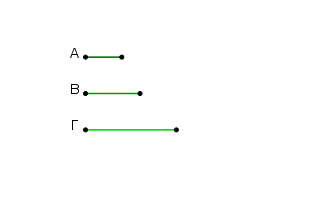
Εἰ γὰρ δυνατόν, ἔστω ὡς ὁ Α πρὸς τὸν Β, ὁ Β πρὸς τὸν Γ. οἱ δὲ Α, Β πρῶτοι, οἱ δὲ πρῶτοι καὶ ἐλάχιστοι, οἱ δὲ ἐλάχιστοι ἀριθμοὶ μετροῦσι τοὺς τὸν αὐτὸν λόγον ἔχοντας ἰσάκις ὅ τε ἡγούμενος τὸν ἡγούμενον καὶ ὁ ἑπόμενος τὸν ἑπόμενον· μετρεῖ ἄρα ὁ Α τὸν Β ὡς ἡγούμενος ἡγούμενον. μετρεῖ δὲ καὶ ἑαυτόν· ὁ Α ἄρα τοὺς Α, Β μετρεῖ πρώτους ὄντας πρὸς ἀλλήλους· ὅπερ ἄτοπον. οὐκ ἄρα ἔσται ὡς ὁ Α πρὸς τὸν Β, οὕτως ὁ Β πρὸς τὸν Γ· ὅπερ ἔδει δεῖξαι.
᾿Εὰν ὦσιν ὁσοιδηποτοῦν ἀριθμοὶ ἑξῆς ἀνάλογον, οἱ δὲ ἄκροι αὐτῶν πρῶτοι πρὸς ἀλλήλους ὦσιν, οὐκ ἔσται ὡς ὁ πρῶτος πρὸς τὸν δεύτερον, οὕτως ὁ ἔσχατος πρὸς ἄλλον τινά.
῎Εστωσαν ὁσοιδηποτοῦν ἀριθμοὶ ἑξῆς ἀνάλογον οἱ Α, Β, Γ, Δ, οἱ δὲ ἄκροι αὐτῶν οἱ Α, Δ πρῶτοι πρὸς ἀλλήλους ἔστωσαν· λέγω, ὅτι οὐκ ἔστιν ὡς ὁ Α πρὸς τὸν Β, οὕτως ὁ Δ πρὸς ἄλλον τινά.
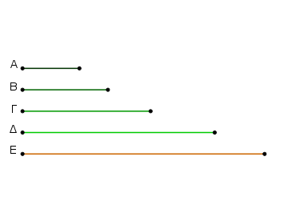
Εἰ γὰρ δυνατόν, ἔστω ὡς ὁ Α πρὸς τὸν Β, οὕτως ὁ Δ πρὸς τὸν Ε· ἐναλλὰξ ἄρα ἐστὶν ὡς ὁ Α πρὸς τὸν Δ, ὁ Β πρὸς τὸν Ε. οἱ δὲ Α, Δ πρῶτοι, οἱ δὲ πρῶτοι καὶ ἐλάχιστοι, οἱ δὲ ἐλάχιστοι ἀριθμοὶ μετροῦσι τοὺς τὸν αὐτὸν λόγον ἔχοντας ἰσάκις ὅ τε ἡγούμενος τὸν ἡγούμενον καὶ ὁ ἑπόμενος τὸν ἑπόμενον. μετρεῖ ἄρα ὁ Α τὸν Β. καί ἐστιν ὡς ὁ Α πρὸς τὸν Β, ὁ Β πρὸς τὸν Γ. καὶ ὁ Β ἄρα τὸν Γ μετρεῖ΄· ὥστε καὶ ὁ Α τὸν Γ μετρεῖ.
καὶ ἐπεί ἐστιν ὡς ὁ Β πρὸς τὸν Γ, ὁ Γ πρὸς τὸν Δ, μετρεῖ δὲ ὁ Β τὸν Γ, μετρεῖ ἄρα καὶ ὁ Γ τὸν Δ. ἀλλ᾿ ὁ Α τὸν Γ ἐμέτρει· ὥστε ὁ Α καὶ τὸν Δ μετρεῖ. μετρεῖ δὲ καὶ ἑαυτόν. ὁ Α ἄρα τοὺς Α, Δ μετρεῖ πρώτους ὄντας πρὸς ἀλλήλους· ὅπερ ἐστὶν ἀδύνατον.
οὐκ ἄρα ἔσται ὡς ὁ Α πρὸς τὸν Β, οὕτως ὁ Δ πρὸς ἄλλον τινά· ὅπερ ἔδει δεῖξαι.
Δύο ἀριθμῶν δοθέντων ἐπισκέψασθαι, εἰ δυνατόν ἐστιν αὐτοῖς τρίτον ἀνάλογον προσευρεῖν.
῎Εστωσαν οἱ δοθέντες δύο ἀριθμοὶ οἱ Α, Β, καὶ δέον ἔστω ἐπισκέψασθαι, εἰ δυνατόν ἐστιν αὐτοῖς τρίτον ἀνάλογον προσευρεῖν.
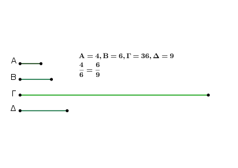
Οἱ δὴ Α, Β ἤτοι πρῶτοι πρὸς ἀλλήλους εἰσὶν ἢ οὔ. καὶ εἰ πρῶτοι πρὸς ἀλλήλους εἰσίν, δέδεικται, ὅτι ἀδύνατόν ἐστιν αὐτοῖς τρίτον ἀνάλογον προσευρεῖν.
᾿Αλλὰ δὴ μὴ ἔστωσαν οἱ Α, Β πρῶτοι πρὸς ἀλλήλους, καὶ ὁ Β ἑαυτον πολλαπλασιάσας τὸν Γ ποιείτω. ὁ Α δὴ τὸν Γ ἤτοι μετρεῖ ἢ οὐ μετρεῖ.
μετρείτω πρότερον κατὰ τὸν Δ· ὁ Α ἄρα τὸν Δ πολλαπλασιάσας τὸν Γ πεποίηκεν. ἀλλα μὴν καὶ ὁ Β ἑαυτὸν πολλαπλασιάσας τὸν Γ πεποίηκεν· ὁ ἄρα ἐκ τῶν Α, Δ ἴσος ἐστὶ τῷ ἀπὸ τοῦ Β. ἔστιν ἄρα ὡς ὁ Α πρὸς τὸν Β, ὁ Β πρὸς τὸν Δ· τοῖς Α, Β ἄρα τρίτος ἀριθμὸς ἀνάλογον προσηύρηται ὁ Δ.
᾿Αλλὰ δὴ μὴ μετρείτω ὁ Α τὸν Γ· λέγω, ὅτι τοῖς Α, Β ἀδύνατόν ἐστι τρίτον ἀνάλογον προσευρεῖν ἀριθμόν.
εἰ γὰρ δυνατόν, προσηυρήσθω ὁ Δ. ὁ ἄρα ἐκ τῶν Α, Δ ἴσος ἐστὶ τῷ ἀπὸ τοῦ Β. ὁ δὲ ἀπὸ τοῦ Β ἐστιν ὁ Γ· ὁ ἄρα ἐκ τῶν Α, Δ ἴσος ἐστὶ τῷ Γ. ὥστε ὁ Α τὸν Δ πολλαπλασιάσας τὸν Γ πεποίηκεν· ὁ Α ἄρα τὸν Γ μετρεῖ κατὰ τὸν Δ. ἀλλα μὴν ὑπόκειται καὶ μὴ μετρῶν· ὅπερ ἄτοπον.
οὐκ ἄρα δυνατόν ἐστι τοῖς Α, Β τρίτον ἀνάλογον προσευρεῖν ἀριθμὸν, ὅταν ὁ Α τὸν Γ μὴ μετρῇ· ὅπερ ἔδει δεῖξαι.
Τριῶν ἀριθμῶν δοθέντων ἐπισκέψασθαι, πότε δυνατόν ἐστιν αὐτοῖς τέταρτον ἀνάλογον προσευρεῖν.
῎Εστωσαν οἱ δοθέντες τρεῖς ἀριθμοὶ οἱ Α, Β, Γ, καὶ δέον ἔστω επισκέψασθαι, πότε δυνατόν ἐστιν αὐτοῖς τέταρτον ἀνάλογον προσευρεῖν.
῎Ητοι οὖν οὔκ εἰσιν ἑξῆς ἀνάλογον, καὶ οἱ ἄκροι αὐτῶν πρῶτοι πρὸς ἀλλήλους εἰσίν, ἢ ἑξῆς εἰσιν ἀνάλογον, καὶ οἱ ἄκροι αὐτῶν οὔκ εἰσι πρῶτοι πρὸς ἀλλήλους, ἢ οὕτε ἑξῆς εἰσιν ἀνάλογον, οὔτε οἱ ἄκροι αὐτῶν πρῶτοι πρὸς ἀλλήλους εἰσίν, ἢ καὶ ἑξῆς εἰσιν ἀνάλογον, καὶ οἱ ἄκροι αὐτῶν πρῶτοι πρὸς ἀλλήλους εἰσίν.
Εἰ μὲν οὖν οἱ Α, Β, Γ ἑξῆς εἰσιν ἀνάλογον, καὶ οἱ ἄκροι αὐτῶν οἱ Α, Γ πρῶτοι πρὸς ἀλλήλους εἰσίν, δέδεικται, ὅτι ἀδύνατόν ἐστιν αὐτοῖς τέταρτον ἀνάλογον προσευρεῖν ἀριθμόν.
μὴ ἔστωσαν δὴ οἱ Α, Β, Γ ἑξῆς ἀνάλογον τῶν ἀκρῶν πάλιν ὄντων πρώτων πρὸς ἀλλήλους. λέγω, ὅτι καὶ οὕτως ἀδύνατόν ἐστιν αὐτοῖς τέταρτον ἀνάλογον προσευρεῖν. εἰ γὰρ δυνατόν, προσευρήσθω ὁ Δ, ὥστε εἶναι ὡς τὸν Α πρὸς τὸν Β, τὸν Γ πρὸς τὸν Δ, καὶ γεγονέτω ὡς ὁ Β πρὸς τὸν Γ, ὁ Δ πρὸς τὸν Ε.
καὶ ἐπεί ἐστιν ὡς μὲν ὁ Α πρὸς τὸν Β, ὁ Γ πρὸς τὸν Δ, ὡς δὲ ὁ Β πρὸς τὸν Γ, ὁ Δ πρὸς τὸν Ε, δι᾿ ἴσου ἄρα ὡς ὁ Α πρὸς τὸν Γ, ὁ Γ πρὸς τὸν Ε. οἱ δὲ Α, Γ πρῶτοι, οἱ δὲ πρῶτοι καὶ ἐλάχιστοι, οἱ δὲ ἐλάχιστοι μετροῦσι τοὺς τὸν αὐτὸν λόγον ἔχοντας ὅ τε ἡγούμενος τὸν ἡγούμενον καὶ ὁ ἑπόμενος τὸν ἑπόμενον. μετρεῖ ἄρα ὁ Α τὸν Γ ὡς ἡγούμενος ἡγούμενον. μετρεῖ δὲ καὶ ἑαυτόν· ὁ Α ἄρα τοὺς Α, Γ μετρεῖ πρώτους ὄντας πρὸς ἀλλήλους· ὅπερ ἐστὶν ἀδύνατον. οὐκ ἄρα τοῖς Α, Β, Γ δυνατόν ἐστι τέταρτον ἀνάλογον προσευρεῖν.
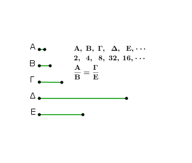
᾿Αλλά δὴ πάλιν ἔστωσαν οἱ Α, Β, Γ ἑξῆς ἀνάλογον, οἱ δὲ Α, Γ μὴ ἔστωσαν πρῶτοι πρὸς ἀλλήλους. λέγω, ὅτι δυνατόν ἐστιν αὐτοῖς τέταρτον ἀνάλογον προσευρεῖν. ὁ γὰρ Β τὸν Γ πολλαπλασιάσας τὸν Δ ποιείτω· ὁ Α ἄρα τὸν Δ ἤτοι μετρεῖ ἢ οὐ μετρεῖ.
μετρείτω αὐτὸν πρότερον κατὰ τὸν Ε· ὁ Α ἄρα τὸν Ε πολλαπλασιάσας τὸν Δ πεποίηκεν. ἀλλὰ μὴν καὶ ὁ Β τὸν Γ πολλαπλασιάσας τὸν Δ πεποίηκεν· ὁ ἄρα ἐκ τῶν Α, Ε ἴσος ἐστὶ τῷ ἐκ τῶν Β, Γ. ἀνάλογον ἄρα [ἐστὶν] ὡς ὁ Α πρὸς τὸν Β, ὁ Γ πρὸς τὸν Ε· τοὶς Α, Β, Γ ἄρα τέταρτος ἀνάλογον προσηύρηται ὁ Ε.
᾿Αλλὰ δὴ μὴ μετρείτω ὁ Α τὸν Δ· λέγω, ὅτι ἀδύνατόν ἐστι τοῖς Α, Β, Γ τέταρτον ἀνάλογον προσευρεῖν ἀριθμόν.
εἰ γὰρ δυνατόν, προσευρήσθω ὁ Ε· ὁ ἄρα ἐκ τῶν Α, Ε ἴσος ἐστὶ τῷ ἐκ τῶν Β, Γ. ἀλλὰ ὁ ἑκ τῶν Β, Γ ἐστιν ὁ Δ· καὶ ὁ ἐκ τῶν Α, Ε ἄρα ἴσος ἐστὶ τῷ Δ. ὁ Α ἄρα τὸν Ε πολλαπλασιάσας τὸν Δ πεποίηκεν· ὁ Α ἄρα τὸν Δ μετρεῖ κατὰ τὸν Ε· ὥστε μετρεῖ ὁ Α τὸν Δ. ἀλλὰ καὶ οὐ μετρεῖ· ὅπερ ἄτοπον. οὐκ ἄρα δυνάτον ἐστι τοῖς Α, Β, Γ τέταρτον ἀνάλογον προσευρεῖν ἀριθμόν, ὅταν ὁ Α τὸν Δ μὴ μετρῇ.
ἀλλὰ δὴ οἱ Α, Β, Γ μήτε ἑξῆς ἔστωσαν ἀνάλογον μήτε οἱ ἄκροι πρῶτοι πρὸς ἀλλήλους. καὶ ὁ Β τὸν Γ πολλαπλασιάσας τὸν Δ ποιείτω. ὁμοίως δὴ δειχθήσεται, ὅτι εἰ μὲν μετρεῖ ὁ Α τὸν Δ, δυνατόν ἐστιν αὐτοῖς ἀνάλογον προσευρεῖν, εἰ δὲ οὐ μετρεῖ, ἀδύνατον· ὅπερ ἔδει δεῖξαι.
Οἱ πρῶτοι ἀριθμοὶ πλείους εἰσὶ παντὸς τοῦ προτεθέντος πλήθους πρώτων ἀριθμῶν.
῎Εστωσαν οἱ προτεθέντες πρῶτοι ἀριθμοὶ οἱ Α, Β, Γ· λέγω, ὅτι τῶν Α, Β, Γ πλείους εἰσὶ πρῶτοι ἀριθμοί.
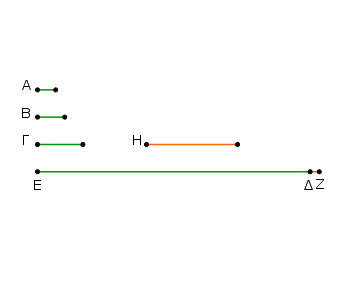
Εἰλήφθω γὰρ ὁ ὑπὸ τῶν Α, Β, Γ ἐλάχιστος μετρούμενος καὶ ἔστω ΔΕ, καὶ προσκείσθω τῷ ΔΕ μονὰς ἡ ΔΖ. ὁ δὴ ΕΖ ἤτοι πρῶτός ἐστιν ἢ οὔ. ἔστω πρότερον πρῶτος· εὐρημένοι ἄρα εἰσὶ πρῶτοι ἀριθμοὶ οἱ Α, Β, Γ, ΕΖ πλείους τῶν Α, Β, Γ.
᾿Αλλὰ δὴ μὴ ἔστω ὁ ΕΖ πρῶτος· ὑπὸ πρώτου ἄρα τινὸς ἀριθμοῦ μετρεῖται. μετρείσθω ὑπὸ πρώτου τοῦ Η· λέγω, ὅτι ὁ Η οὐδενὶ τῶν Α, Β, Γ ἐστιν ὁ αὐτός.
εἰ γὰρ δυνατόν, ἔστω. οἱ δὲ Α, Β, Γ τὸν ΔΕ μετροῦσιν· καὶ ὁ Η ἄρα τὸν ΔΕ μετρήσει. μετρεῖ δὲ καὶ τὸν ΕΖ· καὶ λοιπὴν τὴν ΔΖ μονάδα μετρήσει ὁ Η ἀριθμὸς ὤν· ὄπερ ἄτοπον.
οὐκ ἄρα ὁ Η ἑνὶ τῶν Α, Β, Γ ἐστιν ὁ αὐτός. καὶ ὑπόκειται πρῶτος. εὑρημένοι ἄρα εἰσὶ πρῶτοι ἀριθμοὶ πλείους τοῦ προτεθέντος πλήθους τῶν Α, Β, Γ οἱ Α, Β, Γ, Η· ὅπερ ἔδει δεῖξαι.
᾿Εὰν ἄρτιοι ἀριθμοὶ ὁποσοιοῦν συντεθῶσιν, ὁ ὅλος ἄρτιός ἐστιν.
Συγκείσθωσαν γὰρ ἄρτιοι ἀριθμοὶ ὁποσοιοῦν οἱ ΑΒ, ΒΓ, ΓΔ, ΔΕ· λέγω, ὅτι ὅλος ὁ ΑΕ ἄρτιός ἐστιν.
᾿Επεὶ γὰρ ἕκαστος τῶν ΑΒ, ΒΓ, ΓΔ, ΔΕ ἄρτιός ἐστιν, ἔχει μέρος ἥμισυ· ὥστε καὶ ὅλος ὁ ΑΕ ἔχει μέρος ἥμισυ. ἄρτιος δὲ ἀριθμός ἐστιν ὁ δίχα διαιρούμενος· ἄρτιος ἄρα ἐστὶν ὁ ΑΕ· ὅπερ ἔδει δεῖξαι.
᾿Εὰν περισσοὶ ἀριθμοὶ ὁποσοιοῦν συντεθῶσιν, τὸ δὲ πλῆθος αὐτῶν ἄρτιον ᾖ, ὁ ὅλος ἄρτιος ἔσται.
Συγκείσθωσαν γὰρ περισσοὶ ἀριθμοὶ ὁσοιδηποτοῦν ἄρτιοι τὸ πλῆθος οἱ ΑΒ, ΒΓ, ΓΔ, ΔΕ· λέγω, ὅτι ὅλος ὁ ΑΕ ἄρτιός ἐστιν.
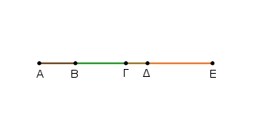
᾿Επεὶ γὰρ ἕκαστος τῶν ΑΒ, ΒΓ, ΓΔ, ΔΕ περιττός ἐστιν, ἀφαιρεθείσης μονάδος ἀφ᾿ ἑκάστου ἕκαστος τῶν λοιπῶν ἄρτιος ἔσται· ὥστε καὶ ὁ συγκείμενος ἐξ αὐτῶν ἄρτιος ἔσται. ἔστι δὲ καὶ τὸ πλῆθος τῶν μονάδων ἄρτιον. καὶ ὅλος ἄρα ὁ ΑΕ ἄρτιός ἐστιν· ὅπερ ἔδει δεῖξαι.
᾿Εὰν περισσοὶ ἀριθμοὶ ὁποσοιοῦν συντεθῶσιν, τὸ δὲ πλῆθος αὐτῶν περισσὸν ᾖ, καὶ ὁ ὅλος περισσὸς ἔσται.
Συγκείσθωσαν γὰρ ὁποσοιοῦν περισσοὶ ἀριθμοί, ὧν τὸ πλῆθος περισσὸν ἔστω, οἱ ΑΒ, ΒΓ, ΓΔ· λέγω, ὅτι καὶ ὅλος ὁ ΑΔ περισσός ἐστιν.
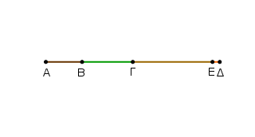
᾿Αφῃρήσθω ἀπὸ τοῦ ΓΔ μονὰς ἡ ΔΕ· λοιπὸς ἄρα ὁ ΓΕ ἄρτιός ἐστιν. ἔστι δὲ καὶ ὁ ΓΑ ἄρτιος· καὶ ὅλος ἄρα ὁ ΑΕ ἄρτιός ἐστιν. καί ἐστι μονὰς ἡ ΔΕ. περισσὸς ἄρα ἐστὶν ὁ ΑΔ· ὅπερ ἔδει δεῖξαι.
᾿Εὰν ἀπὸ ἀρτίου ἀριθμοῦ ἄρτιος ἀφαιρεθῇ, ὁ λοιπὸς ἄρτιος ἔσται.
᾿Απὸ γὰρ ἀρτίου τοῦ ΑΒ ἄρτιος ἀφῃρήσθω ὁ ΒΓ· λέγω, ὅτι ὁ λοιπὸς ὁ ΓΑ ἄρτιός ἐστιν.
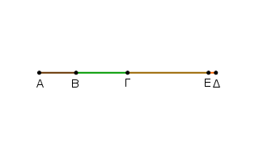
᾿Επεὶ γὰρ ὁ ΑΒ ἄρτιός ἐστιν, ἔχει μέρος ἥμισυ. διὰ τὰ αὐτὰ δὴ καὶ ὁ ΒΓ ἔχει μέρος ἥμισυ· ὥστε καὶ λοιπὸς [ὁ ΓΑ ἔχει μέρος ἥμισυ] ἄρτιος [ἄρα] ἐστὶν ὁ ΑΓ· ὅπερ ἔδει δεῖξαι.
᾿Εὰν ἀπὸ ἀρτίου ἀριθμοῦ περισσὸς ἀφαιρεθῇ, ὁ λοιπὸς περισσὸς ἔσται.
᾿Απὸ γὰρ ἀρτίου τοῦ ΑΒ περισσὸς ἀφῃρήσθω ὁ ΒΓ· λέγω, ὅτι ὁ λοιπὸς ὁ ΓΑ περισσός ἐστιν.
᾿Αφῃρήσθω γὰρ ἀπὸ τοῦ ΒΓ μονὰς ἡ ΓΔ· ὁ ΔΒ ἄρα ἄρτιός ἐστιν. ἔστι δὲ καὶ ὁ ΑΒ ἄρτιος· καὶ λοιπὸς ἄρα ὁ ΑΔ ἄρτιός ἐστιν. καί ἐστι μονὰς ἡ ΓΔ· ὁ ΓΑ ἄρα περισσός ἐστιν· ὅπερ ἔδει δεῖξαι.
᾿Εὰν ἀπὸ περισσοῦ ἀριθμοῦ περισσὸς ἀφαιρεθῇ, ὁ λοιπὸς ἄρτιος ἔσται.
᾿Απὸ γὰρ περισσοῦ τοῦ ΑΒ περισσὸς ἀφῃρήσθω ὁ ΒΓ· λέγω, ὅτι ὁ λοιπὸς ὁ ΓΑ ἄρτιός ἐστιν.
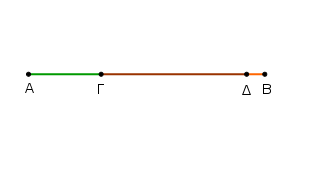
᾿Επεὶ γὰρ ὁ ΑΒ περισσός ἐστιν, ἀφῃρήσθω μονὰς ἡ ΒΔ· λοιπὸς ἄρα ὁ ΑΔ ἄρτιός ἐστιν. διὰ τὰ αὐτὰ δὴ καὶ ὁ ΓΔ ἄρτιός ἐστιν· ὥστε καὶ λοιπὸς ὁ ΓΑ ἄρτιός ἐστιν· ὅπερ ἔδει δεῖξαι.
᾿Εὰν ἀπὸ περισσοῦ ἀριθμοῦ ἄρτιος ἀφαιρεθῇ, ὁ λοιπὸς περισσὸς ἔσται.
᾿Απὸ γὰρ περισσοῦ τοῦ ΑΒ ἄρτιος ἀφῃρήσθω ὁ ΒΓ· λέγω, ὅτι ὁ λοιπὸς ὁ ΓΑ περισσός ἐστιν.
᾿Αφῃρήσθω [γὰρ] μονὰς ἡ ΑΔ· ὁ ΔΒ ἄρα ἄρτιός ἐστιν. ἔστι δὲ καὶ ὁ ΒΓ ἄρτιος· καὶ λοιπὸς ἄρα ὁ ΓΔ ἄρτιός ἐστιν. περισσὸς ἄρα ὁ ΓΑ· ὅπερ ἔδει δεῖξαι.
᾿Εὰν περισσὸς ἀριθμὸς ἄρτιον πολλαπλασιάσας ποιῇ τινα, ὁ γενόμενος ἄρτιος ἔσται.
Περισσὸς γὰρ ἀριθμὸς ὁ Α ἄρτιον τὸν Β πολλαπλασιάσας τὸν Γ ποιείτω· λέγω, ὅτι ὁ Γ ἄρτιός ἐστιν.
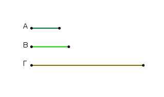
᾿Επεὶ γὰρ ὁ Α τὸν Β πολλαπλασιάσας τὸν Γ πεποίηκεν, ὁ Γ ἄρα σύγκειται ἐκ τοσούτων ἴσων τῷ Β, ὅσαι εἰσὶν ἐν τῷ Α μονάδες. καί ἐστιν ὁ Β ἄρτιος· ὁ Γ ἄρα σύγκειται ἐξ ἀρτίων. ἐὰν δὲ ἄρτιοι ἀριθμοὶ ὁποσοιοῦν συντεθῶσιν, ὁ ὅλος ἄρτιός ἐστιν. ἄρτιος ἄρα ἐστὶν ὁ Γ· ὅπερ ἔδει δεῖξαι.
᾿Εὰν περισσὸς ἀριθμὸς περισσὸν ἀριθμὸν πολλαπλασιάςας ποιῇ τινα, ὁ γενόμενος περισσὸς ἔσται.
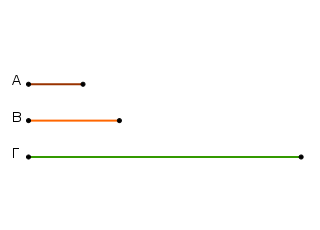
Περισσὸς γὰρ ἀριθμὸς ὁ Α περισσὸν τὸν Β πολλαπλασιάσας τὸν Γ ποιείτω· λέγω, ὅτι ὁ Γ περισσός ἐστιν.
᾿Επεὶ γὰρ ὁ Α τὸν Β πολλαπλασιάσας τὸν Γ πεποίηκεν, ὁ Γ ἄρα σύγκειται ἐκ τοσούτων ἴσων τῷ Β, ὅσαι εἰσὶν ἐν τῷ Α μονάδες. καί ἐστιν ἑκάτερος τῶν Α, Β περισσός· ὁ Γ ἄρα σύγκειται ἐκ περισσῶν ἀριθμῶν, ὧν τὸ πλῆθος περισσόν ἐστιν. ὥστε ὁ Γ περισσός ἐστιν· ὅπερ ἔδει δεῖξαι.
᾿Εὰν περισσὸς ἀριθμὸς ἄρτιον ἀριθμὸν μετρῇ, καὶ τὸν ἥμισυν αὐτοῦ μετρήσει.
Περισσὸς γὰρ ἀριθμὸς ὁ Α ἄρτιον τὸν Β μετρείτω· λέγω, ὅτι καὶ τὸν ἥμισυν αὐτοῦ μετρήσει.
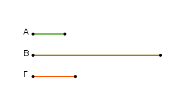
᾿Επεὶ γὰρ ὁ Α τὸν Β μετρεῖ, μετρείτω αὐτὸν κατὰ τὸν Γ· λέγω, ὅτι ὁ Γ οὐκ ἔστι περισσός. εἰ γὰρ δυνατόν, ἔστω. καὶ ἐπεὶ ὁ Α τὸν Β μετρεῖ κατὰ τὸν Γ, ὁ Α ἄρα τὸν Γ πολλαπλασιάσας τὸν Β πεποίηκεν. ὁ Β ἄρα σύγκειται ἐκ περισσῶν ἀριθμῶν, ὧν τὸ πλῆθος περισσόν ἐστιν. ὁ Β ἄρα περισσός ἐστιν· ὅπερ ἄτοπον· ὑπόκειται γὰρ ἄρτιος. οὐκ ἄρα ὁ Γ περισσός ἐστιν· ἄρτιος ἄρα ἐστὶν ὁ Γ. ὥστε ὁ Α τὸν Β μετρεῖ ἀρτιάκις. διὰ δὴ τοῦτο καὶ τὸν ἥμισυν αὐτοῦ μετρήσει· ὅπερ ἔδει δεῖξαι.
᾿Εὰν περισσὸς ἀριθμὸς πρός τινα ἀριθμὸν πρῶτος ᾖ, καὶ πρὸς τὸν διπλασίονα αὐτοῦ πρῶτος ἔσται.
Περισσὸς γὰρ ἀριθμὸς ὁ Α πρός τινα ἀριθμὸν τὸν Β πρῶτος ἔστω, τοῦ δὲ Β διπλασίων ἔστω ὁ Γ· λέγω, ὅτι ὁ Α [καὶ] πρὸς τὸν Γ πρῶτός ἐστιν.
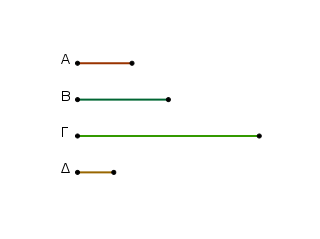
Εἰ γὰρ μή εἰσιν [οἱ Α, Γ] πρῶτοι, μετρήσει τις αὐτοὺς ἀριθμός. μετρείτω, καὶ ἔστω ὁ Δ. καί ἐστιν ὁ Α περισσός· περισσὸς ἄρα καὶ ὁ Δ.
καὶ ἐπεὶ ὁ Δ περισσὸς ὢν τὸν Γ μετρεῖ, καί ἐστιν ὁ Γ ἄρτιος, καὶ τὸν ἥμισυν ἄρα τοῦ Γ μετρήσει [ὁ Δ]. τοῦ δὲ Γ ἥμισύ ἐστιν ὁ Β· ὁ Δ ἄρα τὸν Β μετρεῖ. μετρεῖ δὲ καὶ τὸν Α. ὁ Δ ἄρα τοὺς Α, Β μετρεῖ πρώτους ὄντας πρὸς ἀλλήλους· ὅπερ ἐστὶν ἀδύνατον.
οὐκ ἄρα ὁ Α πρὸς τὸν Γ πρῶτος οὔκ ἐστιν. οἱ Α, Γ ἄρα πρῶτοι πρὸς ἀλλήλους εἰσίν· ὅπερ ἔδει δεῖξαι.
Τῶν ἀπὸ δύαδος διπλασιαζομένων ἀριθμων ἕκαστος ἀρτιάκις ἄρτιός ἐστι μόνον.
᾿Απὸ γὰρ δύαδος τῆς Α δεδιπλασιάσθωσαν ὁσοιδηποτοῦν ἀριθμοὶ οἱ Β, Γ, Δ· λέγω, ὅτι οἱ Β, Γ, Δ ἀρτιάκις ἄρτιοί εἰσι μόνον.
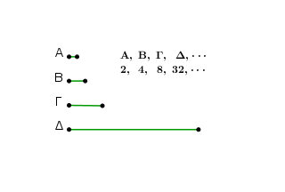
῞Οτι μὲν οὖν ἕκαστος [τῶν Β, Γ, Δ] ἀρτιάκις ἄρτιός ἐστιν, φανερόν· ἀπὸ γὰρ δυάδος ἐστὶ διπλασιασθείς. λέγω, ὅτι καὶ μόνον. ἐκκείσθω γὰρ μονάς. ἐπεὶ οὖν ἀπὸ μονάδος ὁποσοιοῦν ἀριθμοὶ ἑξῆς ἀνάλογόν εἰσιν, ὁ δὲ μετὰ τὴν μονάδα ὁ Α πρῶτός ἐστιν, ὁ μέγιστος τῶν Α, Β, Γ, Δ ὁ Δ ὑπ᾿ οὐδενὸς ἄλλου μετρηθήσεται παρὲξ τῶν Α, Β, Γ. καί ἐστιν ἕκαστος τῶν Α, Β, Γ ἄρτιος· ὁ Δ ἄρα ἀρτιάκις ἄρτιός ἐστι μόνον.
ὁμοίως δὴ δείξομεν, ὅτι [καὶ] ἑκάτερος τῶν Β, Γ ἀρτιάκις ἄρτιός ἐστι μόνον· ὅπερ ἔδει δεῖξαι.
᾿Εὰν ἀριθμὸς τὸν ἥμισυν ἔχῃ περισσόν, ἀρτιάκις περισσός ἐστι μόνον.
᾿Αριθμὸς γὰρ ὁ Α τὸν ἥμισυν ἐχέτω περισσόν· λέγω, ὅτι ὁ Α ἀρτιάκις περισσός ἐστι μόνον.
῞Οτι μὲν οὖν ἀρτιάκις περισσός ἐστιν, φανερόν· ὁ γὰρ ἥμισυς αὐτοῦ περισσὸς ὢν μετρεῖ αὐτὸν ἀρτιάκις, λέγω δή, ὅτι καὶ μόνον.
εἰ γὰρ ἔσται ὁ Α καὶ ἀρτιάκις ἄρτιος, μετρηθήσεται ὑπὸ ἀρτίου κατὰ ἄρτιον ἀριθμόν· ὥστε καὶ ὁ ἥμισυς αὐτοῦ μετρηθήσεται ὑπὸ ἀρτίου ἀριθμοῦ περισσὸς ὤν· ὅπερ ἐστὶν ἄτοπον. ὁ Α ἄρα ἀρτιάκις περισσός ἐστι μόνον· ὅπερ ἔδει δεῖξαι.
᾿Εὰν ἀριθμὸς μήτε τῶν ἀπὸ δυάδος διπλασιαζομένων ᾖ, μήτε τὸν ἥμισυν ἔχῃ περισσόν, ἀρτιάκις τε ἄρτιός ἐστι καὶ ἀρτιάκις περισσός.
᾿Αριθμὸς γὰρ ὁ Α μήτε τῶν ἀπὸ δυάδος διπλασιαζομένων ἔστω μήτε τὸν ἥμισυν ἐχέτω περισσόν· λέγω, ὅτι ὁ Α ἀρτιάκις τέ ἐστιν ἄρτιος καὶ ἀρτιάκις περισσός.
῞Οτι μὲν οὖν ὁ Α ἀρτιάκις ἐστὶν ἄρτιος, φανερόν· τὸν γὰρ ἥμισυν οὐκ ἔχει περισσόν. λέγω δή, ὅτι καὶ ἀρτιάκις περισσός ἐστιν. ἐὰν γὰρ τὸν Α τέμνωμεν δίχα καὶ τὸν ἥμισυν αὐτοῦ δίχα καὶ τοῦτο ἀεὶ ποιῶμεν, καταντήσομεν εἴς τινα ἀριθμὸν περισσόν, ὃς μετρήσει τὸν Α κατὰ ἄρτιον ἀριθμόν.
εἰ γὰρ οὔ, καταντήσομεν εἰς δυάδα, καὶ ἔσται ὁ Α τῶν ἀπὸ δυάδος διπλασιαζομένων· ὅπερ οὐχ ὑπόκειται. ὥστε ὁ Α ἀρτιάκις περισσόν ἐστιν. ἐδείχθη δὲ καὶ ἀρτιάκις ἄρτιος. ὁ Α ἄρα ἀρτιάκις τε ἄρτιός ἐστι καὶ ἀρτιάκις περισσός· ὅπερ ἔδει δεῖξαι.
᾿Εὰν ὦσιν ὁσοιδηποτοῦν ἀριθμοὶ ἑξῆς ἀνάλογον, ἀφαιρεθῶσι δὲ ἀπό τε τοῦ δευτέρου καὶ τοῦ ἐσχάτου ἴσοι τῷ πρώτῳ, ἔσται ὡς ἡ τοῦ δευτέρου ὑπεροχὴ πρὸς τὸν πρῶτον, οὕτως ἡ τοῦ ἐσχάτου ὑπεροχὴ πρὸς τοὺς πρὸ ἑαυτοῦ πάντας.
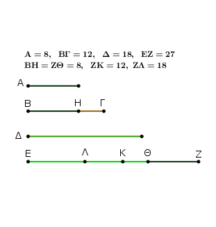
῎Εστωσαν ὁποσοιδηποτοῦν ἀριθμοὶ ἑξῆς ἀνάλογον οἱ Α, ΒΓ, Δ, ΕΖ ἀφχόμενοι ἀπὸ ἐλαχίστου τοῦ Α, καὶ ἀφῃρήσθω ἀπὸ τοῦ ΒΓ καὶ τοῦ ΕΖ τῲ Α ἴσος ἑκάτερος τῶν ΒΗ, ΖΘ· λέγω, ὅτι ἐστὶν ὡς ὁ ΗΓ πρὸς τὸν Α, οὕτως ὁ ΕΘ πρὸς τοὺς Α, ΒΓ, Δ.
Κείσθω γὰρ τῷ μὲν ΒΓ ἴσος ὁ ΖΚ, τῷ δὲ Δ ἴσος ὁ ΖΛ. καὶ ἐπεὶ ὁ ΖΚ τῷ ΒΓ ἴσος ἐστίν, ὧν ὁ ΖΘ τῷ ΒΗ ἴσος ἐστίν, λοιπὸς ἄρα ὁ ΘΚ λοιπῷ τῷ ΗΓ ἐστιν ἴσος. καὶ ἐπεί ἐστιν ὡς ὁ ΕΖ πρὸς τὸν Δ, οὕτως ὁ Δ πρὸς τὸν ΒΓ καὶ ὁ ΒΓ πρὸς τὸν Α, ἴσος δὲ ὁ μὲν Δ τῷ ΖΛ, ὁ δὲ ΒΓ τῷ ΖΚ, ὁ δὲ Α τῷ ΖΘ, ἔστιν ἄρα ὡς ὁ ΕΖ πρὸς τὸν ΖΛ, οὕτως ὁ ΛΖ πρὸς τὸν ΖΚ καὶ ὁ ΖΚ πρὸς τὸν ΖΘ.
διελόντι, ὡς ὁ ΕΛ πρὸς τὸν ΛΖ, οὕτως ὁ ΛΚ πρὸς τὸν ΖΚ καὶ ὁ ΚΘ πρὸς τὸν ΖΘ. ἔστιν ἄρα καὶ ὡς εἷς τῶν ἡγουμένων πρὸς ἕνα τῶν ἑπομένων, οὕτως ἅπαντες οἱ ἡγούμενοι πρὸς ἅπαντας τοὺς ἑπομένους· ἔστιν ἄρα ὡς ὁ ΚΘ πρὸς τὸν ΖΘ, οὕτως οἱ ΕΛ, ΛΚ, ΚΘ πρὸς τοὺς ΛΖ, ΖΚ, ΘΖ.
ἴσος δὲ ὁ μὲν ΚΘ τῷ ΓΗ, ὁ δὲ ΖΘ τῷ Α, οἱ δὲ ΛΖ, ΖΚ, ΘΖ τοὶς Δ, ΒΓ, Α· ἔστιν ἄρα ὡς ὁ ΓΗ πρὸς τὸν Α, οὕτως ὁ ΕΘ πρὸς τοὺς Δ, ΒΓ, Α. ἔστιν ἄρα ὡς ἡ τοῦ δευτέρου ὑπεροχὴ πρὸς τὸν πρῶτον, οὕτως ἡ τοῦ ἐσχάτου ὑπεροχὴ πρὸς τοὺς πρὸ ἑαυτοῦ πάντας· ὅπερ ἔδει δεῖξαι.
᾿Εὰν ἀπὸ μονάδος ὁποσοιοῦν ἀριθμοὶ ἑξῆς ἐκτεθῶσιν ἐν τῇ διπλασίονι ἀναλογίᾳ, ἕως οὗ ὁ σύμπας συντεθεὶς πρῶτος γένηται, καὶ ὁ σύμπας ἐπὶ τὸν ἔσχατον πολλαπλασιασθεὶς ποιῇ τινα, ὁ γενόμενος τέλειος ἔσται.
᾿Απὸ γὰρ μονάδος ἐκκείσθωσαν ὁσοιδηποτοῦν ἀριθμοὶ ἐν τῇ διπλασίονι ἀναλογίᾳ, ἕως οὗ ὁ σύμπας συντεθεὶς πρῶτος γένηται, οἱ Α, Β, Γ, Δ, καὶ τῷ σύμπαντι ἴσος ἔστω ὁ Ε, καὶ ὁ Ε τὸν Δ πολλαπλασιάσας τὸν ΖΗ ποιείτω. λέγω, ὅτι ὁ ΖΗ τέλειός ἐστιν.
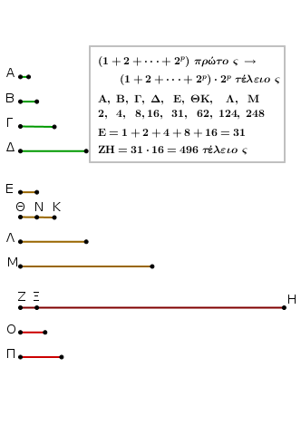
῞Οσοι γάρ εἰσιν οἱ Α, Β, Γ, Δ τῷ πλήθει, τοσοῦτοι ἀπὸ τοῦ Ε εἰλήφθωσαν ἐν τῇ διπλασίονι ἀναλογίᾳ οἱ Ε, ΘΚ, Λ, Μ· δι᾿ ἴσου ἄρα ἐστὶν ὡς ὁ Α πρὸς τὸν Δ, οὕτως ὁ Ε πρὸς τὸν Μ. ὁ ἄρα ἐκ τῶν Ε, Δ ἴσος ἐστὶ τῷ ἐκ τῶν Α, Μ.
καί ἐστιν ὁ ἐκ τῶν Ε, Δ ὁ ΖΗ· καὶ ὁ ἐκ τῶν Α, Μ ἄρα ἐστὶν ὁ ΖΗ. ὁ Α ἄρα τὸν Μ πολλαπλασιάσας τὸν ΖΗ πεποίηκεν· ὁ Μ ἄρα τὸν ΖΗ μετρεῖ κατὰ τὰς ἐν τῷ Α μονάδας. καί ἐστι δυὰς ὁ Α· διπλάσιος ἄρα ἐστὶν ὁ ΖΗ τοῦ Μ. εἰσὶ δὲ καὶ οἱ Μ, Λ, ΘΚ, Ε ἑξῆς διπλάσιοι ἀλλήλων· οἱ Ε, ΘΚ, Λ, Μ, ΖΗ ἄρα ἑξῆς ἀνάλογόν εἰσιν ἐν τῇ διπλασίονι ἀναλογίᾳ.
ἀφῃρήσθω δὴ ἀπὸ τοῦ δευτέρου τοῦ ΘΚ καὶ τοῦ ἐσχάτου τοῦ ΖΗ τῷ πρώτῳ τῷ Ε ἴσος ἑκάτερος τῶν ΘΝ, ΖΞ· ἔστιν ἄρα ὡς ἡ τοῦ δευτέρου ἀριθμοῦ ὑπεροχὴ πρὸς τὸν πρῶτον, οὕτως ἡ τοῦ ἐσχάτου ὑπεροχὴ πρὸς τοὺς πρὸ ἑαυτοῦ πάντας. ἔστιν ἄρα ὡς ὁ ΝΚ πρὸς τὸν Ε, οὕτως ὁ ΞΗ πρὸς τοὺς Μ, Λ, ΚΘ, Ε. καί ἐστιν ὁ ΝΚ ἴσος τῷ Ε· καὶ ὁ ΞΗ ἄρα ἴσος ἐστὶ τοῖς Μ, Λ, ΘΚ, Ε. ἔστι δὲ καὶ ὁ ΖΞ τῷ Ε ἴσος, ὁ δὲ Ε τοῖς Α, Β, Γ, Δ καὶ τῇ μονάδι. ὅλος ἄρα ὁ ΖΗ ἴσος ἐστὶ τοῖς τε Ε, ΘΚ, Λ, Μ καὶ τοῖς Α, Β, Γ, Δ καὶ τῇ μονάδι· καὶ μετρεῖται ὑπ᾿ αὐτῶν.
λέγω, ὅτι καὶ ὁ ΖΗ ὐπ᾿ οὐδενὸς ἄλλου μετρηθήσεται παρὲξ τῶν Α, Β, Γ, Δ, Ε, ΘΚ, Λ, Μ καὶ τῆς μονάδος.
εἰ γὰρ δυνατόν, μετρείτω τις τὸν ΖΗ ὁ Ο, καὶ ὁ Ο μηδενὶ τῶν Α, Β, Γ, Δ, Ε, ΘΚ, Λ, Μ ἔστω ὁ αὐτός. καὶ ὁσάκις ὁ Ο τὸν ΖΗ μετρεῖ, τοσαῦται μονάδες ἔστωσαν ἐν τῷ Π· ὁ Π ἄρα τὸν Ο πολλαπλασιάσας τὸν ΖΗ πεποίηκεν. ἀλλὰ μὴν καὶ ὁ Ε τὸν Δ πολλαπλασιάσας τὸν ΖΗ πεποίηκεν· ἔστιν ἄρα ὡς ὁ Ε πρὸς τὸν Π, ὁ Ο πρὸς τὸν Δ. καὶ ἐπεὶ ἀπὸ μονάδος ἑξῆς ἀνάλογόν εἰσιν οἱ Α, Β, Γ, Δ, ὁ Δ ἄρα ὑπ᾿ οὐδενὸς ἄλλου ἀριθμοῦ μετρηθήσεται παρὲξ τῶν Α, Β, Γ. καὶ ὑπόκειται ὁ Ο οὐδενὶ τῶν Α, Β, Γ ὁ αὐτός· οὐκ ἄρα μετρήσει ὁ Ο τὸν Δ.
ἀλλ᾿ ὡς ὁ Ο πρὸς τὸν Δ, ὁ Ε πρὸς τὸν Π· οὐδὲ ὁ Ε ἄρα τὸν Π μετρεῖ. καί ἐστιν ὁ Ε πρῶτος· πᾶς δὲ πρῶτος ἀριθμὸς πρὸς ἅπαντα, ὃν μὴ μετρεῖ, πρῶτός [ἐστιν]. οἱ Ε, Π ἄρα πρῶτοι πρὸς ἀλλήλους εἰσίν. οἱ δὲ πρῶτοι καὶ ἐλάχιστοι, οἱ δὲ ἐλάχιστοι μετροῦσι τοὺς τὸν αὐτὸν λόγον ἔχοντας ἰσάκις ὅ τε ἡγούμενος τὸν ἡγούμενον καὶ ὁ ἑπόμενος τὸν ἑπόμενον· καί ἐστιν ὡς ὁ Ε πρὸς τὸν Π, ὁ Ο πρὸς τὸν Δ. ἰσάκις ἄρα ὁ Ε τὸν Ο μετρεῖ καὶ ὁ Π τὸν Δ.
ὁ δὲ Δ ὑπ᾿ οὐδενὸς ἄλλου μετρεῖται παρὲξ τῶν Α, Β, Γ· ὁ Π ἄρα ἑνὶ τῶν Α, Β, Γ ἐστιν ὁ αὐτός. ἔστω τῷ Β ὁ αὐτός. καὶ ὅσοι εἰσὶν οἱ Β, Γ, Δ τῷ πλήθει τοσοῦτοι εἰλήφθωσαν ἀπὸ τοῦ Ε οἱ Ε, ΘΚ, Λ. καί εἰσιν οἱ Ε, ΘΚ, Λ τοῖς Β, Γ, Δ ἐν τῷ αὐτῷ λόγω· δι᾿ ἴσου ἄρα ἐστὶν ὡς ὁ Β πρὸς τὸν Δ, ὁ Ε πρὸς τὸν Λ.
ὁ ἄρα ἐκ τῶν Β, Λ ἴσος ἐστὶ τῷ ἐκ τῶν Δ, Ε· ἀλλ᾿ ὁ ἐκ τῶν Δ, Ε ἴσος ἐστὶ τῷ ἐκ τῶν Π, Ο· καὶ ὁ ἐκ τῶν Π, Ο ἄρα ἴσος ἐστὶ τῷ ἐκ τῶν Β, Λ. ἔστιν ἄρα ὡς ὁ Π πρὸς τὸν Β, ὁ Λ πρὸς τὸν Ο. καί ἐστιν ὁ Π τῷ Β ὁ αὐτός· καὶ ὁ Λ ἄρα τῳ Ο ἐστιν ὁ αὐτός· ὅπερ ἀδύνατον· ὁ γὰρ Ο ὑπόκειται μηδενὶ τῶν ἐκκειμένων ὁ αὐτός· οὐκ ἄρα τὸν ΖΗ μετρήσει τις ἀριθμὸς παρὲξ τῶν Α, Β, Γ, Δ, Ε, ΘΚ, Λ, Μ καὶ τῆς μονάδος. καὶ ἐδείχη ὁ ΖΗ τοῖς Α, Β, Γ, Δ, Ε, ΘΚ, Λ, Μ καὶ τῇ μονάδι ἴσος. τέλειος δὲ ἀριθμός ἐστιν ὁ τοῖς ἑαυτοῦ μέρεσιν ἴσος ὤν· τέλειος ἄρα ἐστὶν ὁ ΖΗ· ὅπερ ἔδει δεῖξαι.